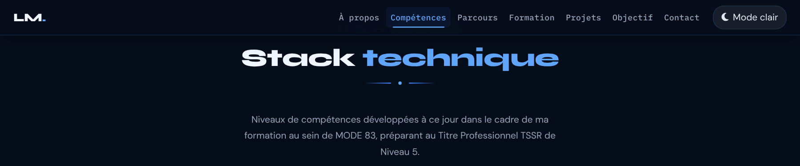
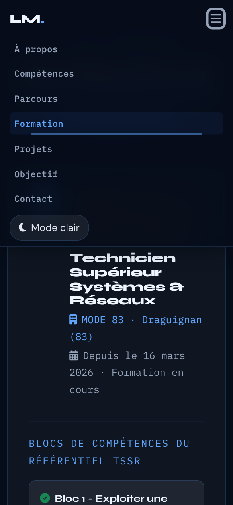

Cascade, spécificité, !important
- Rôle
- Comprendre pourquoi l'ancien module 12 échouait, et pourquoi le correctif fonctionne.
- Documentation
- MDN — spécificité · MDN — !important
- Lignes concernées
- 161, 182 à 186.
Série « Portfolio TSSR » · 20 épisodes

Objectif de l'épisode
Un diplôme, c'est une ligne sur un CV. Un titre professionnel bien présenté devient une preuve.
Vous allez construire la section Formation : une grande carte pour le titre TSSR et ses blocs de compétences, une liste de certifications où chaque médaille a sa couleur et un nuage de qualités. Et vous allez corriger le bug du lien actif de l'épisode 5 :
pourquoi un simple !important bloquait le JavaScript et comment une seule classe CSS règle le problème proprement.
Partie 2
À la fin de cet épisode, vous serez capable de diagnostiquer un conflit de styles,
de le corriger avec une classe plutôt qu'avec du style en JavaScript
et de construire une section de cartes avec une grille imbriquée.
!important.!important grâce à la spécificité.classList.toggle(nom, condition).aria-current.formation-badge badge-niveau5).h-100.Les mots des épisodes précédents sont dans les listes des épisodes 1 à 7.
!important!important, la spécificité départage.classList.toggle()aria-current<hr>Partie 3
Cochez chaque case quand l'étape est faite.
Les cases cochées sont mémorisées sur votre ordinateur.
Tout le nouveau code est écrit dans index.html, config.js, images/ et ressources/
restent identiques.
Partie 4 · par rapport à l'épisode 7
L'épisode 8 ajoute trois blocs et remplace une ligne du module 12. Les numéros de ligne ci-dessous sont ceux de votre fichier de l'épisode 7 (1206 lignes).
.navbar-nav .nav-link:focus::before (ligne 180) et la ligne vide qui suit.#themeToggle { (ligne 182)..premier-stage-banner strong (ligne 592) et la ligne vide qui suit.#formation { à la règle .cert-item, 44 lignes, suivies d'une ligne vide) : juste avant #toast { (ligne 594).<style>, barre de navigation et toutes les sections, jusqu'au </section> de Parcours.</section> de Parcours (ligne 1072), juste avant </main> (ligne 1073).</main>, Bootstrap JS, et le script jusqu'à la ligne sections.forEach(…) du module 12.links.forEach(function (l) { l.style.color = … }); et collez à sa place le correctif JavaScript (5 lignes).</script>, </body>, </html>.Résultat : le fichier passe de 1206 à 1364 lignes.
Les numéros cités dans le reste de cette page sont ceux du nouveau fichier.
links.forEach(function (l) { l.style.color = l.getAttribute('href') === '#' + cur ? 'var(--clr-accent2)' : ''; });
links.forEach(function (l) {
const isActive = l.getAttribute('href') === '#' + cur;
l.classList.toggle('active', isActive);
if (isActive) { l.setAttribute('aria-current', 'location'); } else { l.removeAttribute('aria-current'); }
});Les lignes précédées de + sont à ajouter, celles précédées de − sont à supprimer,
les autres existent déjà.
Zone 1 — le bloc de la barre de navigation
.navbar-nav .nav-link:focus::before { left: 10%; right: 10%; }
.navbar-nav .nav-link.active { … }
.navbar-nav .nav-link.active::before { left: 10%; right: 10%; }
#themeToggle { … }Zone 2 — la fin du premier <style>
.premier-stage-banner strong { … }
#formation { background: var(--clr-bg); }
… (cartes, logo, badges, puces, blocs, certifications)
.cert-item { … }
#toast { … }Zone 3 — dans le <main>
</section> (fin de Parcours)
<section id="formation" aria-labelledby="form-title">
… (la section Formation)
</section>
</main>Zone 4 — le module 12
sections.forEach(function (s) { … });
links.forEach(function (l) { l.style.color = … });
links.forEach(function (l) {
… (classe active et aria-current)
});
}Deux règles de placement à retenir
Partie 5
Les règles pour reconnaître une source officielle restent celles de l'épisode 1.
Les liens marqués s'ouvrent dans un nouvel onglet.
page, step, location, date, time, true et false.Partie 6
On commence par le correctif, sur la page de l'épisode 7 : on voit le bug, puis on le corrige. Ensuite seulement, on construit la section Formation.
Faites défiler à la molette jusqu'à « Compétences ». Dans les outils de développement (F12), onglet Éléments, cliquez sur le lien « Compétences » du menu.
Vous voyez : le lien porte bien style="color: var(--clr-accent2);", mais dans le panneau Styles, cette couleur est barrée : la règle color: var(--clr-text-soft) !important (ligne 161) l'emporte.
Vous voyez : rien encore. Aucun lien ne porte la classe active : la règle attend le JavaScript.
Vous voyez : en faisant défiler, le lien de la section affichée passe en bleu, sur un léger fond, avec son soulignement ouvert. Dans l'onglet Éléments, il porte class="nav-link active" et aria-current="location", et les autres liens n'ont plus rien.
Vous voyez : l'en-tête centré est déjà stylé, ainsi que les petits titres en bleu. Le reste est brut : les textes du titre TSSR, trois blocs, cinq certifications avec leurs médailles colorées (les styles en ligne marchent déjà) et neuf qualités. Le lien « Formation » du menu mène à la section.
Vous voyez : trois cartes encadrées ; la grande carte de gauche a la même hauteur que les deux cartes de droite empilées. Au survol, une carte s'allume sans bouger.
Vous voyez : un carré dégradé avec une toque blanche à côté du titre ; le badge « Titre Professionnel Niveau 5 (Bac+2) » en ambre, le badge « EN COURS » en bleu.
Vous voyez : les neuf qualités en pilules bleues, les trois blocs dans des encadrés plus clairs, et les lignes de certifications alignées avec leur médaille.
Vous avez terminé quand votre fichier fait 1364 lignes, identiques au code de référence (bouton « Surligner les ajouts » de la partie 8), sans erreur rouge dans la Console.
Partie 7 · la plus importante
Chaque fiche répond aux quatre questions Quoi ?, Pourquoi ?, Comment ? et Où ?.
Les numéros sont ceux du nouveau fichier de 1364 lignes.
Le bug et son correctif, côte à côte
.navbar-nav .nav-link { color: var(--clr-text-soft) !important; } /* 2 classes, !important */
.navbar-nav .nav-link.active { color: var(--clr-accent2) !important; } /* 3 classes, !important */style="color: …" sans !important. Une déclaration normale perd toujours contre une déclaration !important, même en ligne.active. Les deux règles ont !important : la plus spécifique gagne, et c'est la nouvelle (3 classes contre 2).aria-current informe les lecteurs d'écran.Ces lignes existent déjà, seul leur numéro a changé.
Le lien ouvre la fiche de l'épisode où elles ont été expliquées
(les dossiers des épisodes doivent être côte à côte).
| Ligne (épisode 8) | Code | Fiche |
|---|---|---|
| 1 | <!DOCTYPE html> | Épisode 1, ligne 1 |
| 2 | <html lang="fr" data-theme="dark" dir="ltr"> | Épisode 1, ligne 2 |
| 3 | <head> | Épisode 1, ligne 3 |
| 4 | <meta charset="UTF-8" /> | Épisode 1, ligne 4 |
| 5 | <meta name="viewport" content="width=device-width, initia… | Épisode 1, ligne 5 |
| 6 | <meta name="description" content="Portfolio professionnel… | Épisode 1, ligne 6 |
| 7 | <meta name="keywords" content="TSSR, technicien systèmes … | Épisode 1, ligne 7 |
| 8 | <meta name="robots" content="index, follow" /> | Épisode 1, ligne 8 |
| 9 | <meta name="theme-color" content="#060d1a" /> | Épisode 1, ligne 9 |
| 10 | <meta name="author" content="Lucas Moreau" /> | Épisode 1, ligne 10 |
| 12 | <link rel="preconnect" href="https://fonts.googleapis.com… | Épisode 1, ligne 12 |
| 13 | <link rel="preconnect" href="https://fonts.gstatic.com" c… | Épisode 1, ligne 13 |
| 14 | <link href="https://fonts.googleapis.com/css2?family=Syne… | Épisode 1, ligne 14 |
| 16 | <link rel="stylesheet" href="https://cdn.jsdelivr.net/npm… | Épisode 1, ligne 16 |
| 17 | <link rel="stylesheet" href="https://cdnjs.cloudflare.com… | Épisode 1, ligne 17 |
| 18 | <link rel="stylesheet" href="https://cdnjs.cloudflare.com… | Épisode 1, ligne 18 |
| 20 | <script src="config.js"></script> | Épisode 1, ligne 20 |
| 21 | <script src="https://cdnjs.cloudflare.com/ajax/libs/pdf.j… | Épisode 1, ligne 21 |
| 23 | <link rel="icon" type="image/png" sizes="32x32" href="ima… | Épisode 1, ligne 23 |
| 24 | <link rel="icon" type="image/png" sizes="192x192" href="i… | Épisode 1, ligne 24 |
| 25 | <link rel="icon" type="image/webp" href="images/favicon-4… | Épisode 1, ligne 25 |
| 26 | <link rel="apple-touch-icon" sizes="180x180" href="images… | Épisode 1, ligne 26 |
| 28 | <title>Portfolio TSSR | Recherche d'emploi – Technicien S… | Épisode 1, ligne 28 |
| 29 | <style> | Épisode 2, ligne 29 |
| 30 | :root { | Épisode 2, ligne 30 |
| 31 | --clr-bg: #060d1a; | Épisode 2, ligne 31 |
| 32 | --clr-bg2: #0b1628; | Épisode 2, ligne 32 |
| 33 | --clr-surface: rgba(255,255,255,.04); | Épisode 2, ligne 33 |
| 34 | --clr-surface2: rgba(255,255,255,.07); | Épisode 2, ligne 34 |
| 35 | --clr-border: rgba(96,165,250,.18); | Épisode 2, ligne 35 |
| 36 | --clr-accent: #3b82f6; | Épisode 2, ligne 36 |
| 37 | --clr-accent2: #60a5fa; | Épisode 2, ligne 37 |
| 38 | --clr-accent3: #93c5fd; | Épisode 2, ligne 38 |
| 39 | --clr-teal: #0ea5e9; | Épisode 2, ligne 39 |
| 40 | --clr-cyan: #22d3ee; | Épisode 2, ligne 40 |
| 41 | --clr-text: #e2e8f0; | Épisode 2, ligne 41 |
| 42 | --clr-text-soft: #94a3b8; | Épisode 2, ligne 42 |
| 43 | --clr-text-faint: #475569; | Épisode 2, ligne 43 |
| 44 | --clr-heading: #f0f6ff; | Épisode 2, ligne 44 |
| 45 | --clr-white: #ffffff; | Épisode 2, ligne 45 |
| 46 | --clr-danger: #f87171; | Épisode 2, ligne 46 |
| 47 | --clr-success: #34d399; | Épisode 2, ligne 47 |
| 48 | --clr-warn: #fbbf24; | Épisode 2, ligne 48 |
| 49 | --radius-sm: 6px; | Épisode 2, ligne 49 |
| 50 | --radius-md: 12px; | Épisode 2, ligne 50 |
| 51 | --radius-lg: 20px; | Épisode 2, ligne 51 |
| 52 | --radius-xl: 32px; | Épisode 2, ligne 52 |
| 53 | --shadow-glow: 0 0 40px rgba(59,130,246,.25); | Épisode 2, ligne 53 |
| 54 | --shadow-card: 0 8px 32px rgba(0,0,0,.45); | Épisode 2, ligne 54 |
| 55 | --trans: .3s cubic-bezier(.4,0,.2,1); | Épisode 2, ligne 55 |
| 56 | --font-display: 'Syne', sans-serif; | Épisode 2, ligne 56 |
| 57 | --font-mono: 'IBM Plex Mono', monospace; | Épisode 2, ligne 57 |
| 58 | --font-body: 'DM Sans', sans-serif; | Épisode 2, ligne 58 |
| 59 | --fz-min: 1.05rem; | Épisode 2, ligne 59 |
| 60 | } | Épisode 2, ligne 60 |
| 62 | [data-theme="light"] { | Épisode 2, ligne 62 |
| 63 | --clr-bg: #f0f4fa; | Épisode 2, ligne 63 |
| 64 | --clr-bg2: #e2e8f0; | Épisode 2, ligne 64 |
| 65 | --clr-surface: rgba(255,255,255,.7); | Épisode 2, ligne 65 |
| 66 | --clr-surface2: rgba(255,255,255,.9); | Épisode 2, ligne 66 |
| 67 | --clr-border: rgba(59,130,246,.2); | Épisode 2, ligne 67 |
| 68 | --clr-accent: #2563eb; | Épisode 2, ligne 68 |
| 69 | --clr-accent2: #3b82f6; | Épisode 2, ligne 69 |
| 70 | --clr-accent3: #60a5fa; | Épisode 2, ligne 70 |
| 71 | --clr-teal: #0284c7; | Épisode 2, ligne 71 |
| 72 | --clr-cyan: #0891b2; | Épisode 2, ligne 72 |
| 73 | --clr-text: #1e293b; | Épisode 2, ligne 73 |
| 74 | --clr-text-soft: #475569; | Épisode 2, ligne 74 |
| 75 | --clr-text-faint: #94a3b8; | Épisode 2, ligne 75 |
| 76 | --clr-heading: #0f172a; | Épisode 2, ligne 76 |
| 77 | --clr-white: #ffffff; | Épisode 2, ligne 77 |
| 78 | --shadow-glow: 0 0 40px rgba(37,99,235,.15); | Épisode 2, ligne 78 |
| 79 | --shadow-card: 0 8px 32px rgba(0,0,0,.12); | Épisode 2, ligne 79 |
| 80 | } | Épisode 2, ligne 80 |
| 82 | *, *::before, *::after { box-sizing: border-box; margin: … | Épisode 2, ligne 82 |
| 84 | html { scroll-behavior: smooth; font-size: 16px; } | Épisode 2, ligne 84 |
| 86 | body { | Épisode 2, ligne 86 |
| 87 | font-family: var(--font-body); | Épisode 2, ligne 87 |
| 88 | background-color: var(--clr-bg); | Épisode 2, ligne 88 |
| 89 | color: var(--clr-text); | Épisode 2, ligne 89 |
| 90 | font-size: var(--fz-min); | Épisode 2, ligne 90 |
| 91 | line-height: 1.7; | Épisode 2, ligne 91 |
| 92 | overflow-x: hidden; | Épisode 2, ligne 92 |
| 93 | transition: background-color var(--trans), color var(--tr… | Épisode 2, ligne 93 |
| 94 | } | Épisode 2, ligne 94 |
| 96 | ::-webkit-scrollbar { width: 7px; } | Épisode 2, ligne 96 |
| 97 | ::-webkit-scrollbar-track { background: var(--clr… | Épisode 2, ligne 97 |
| 98 | ::-webkit-scrollbar-thumb { | Épisode 2, ligne 98 |
| 99 | background: linear-gradient(180deg, var(--clr-accent), va… | Épisode 2, ligne 99 |
| 100 | border-radius: 10px; height: 120px; | Épisode 2, ligne 100 |
| 101 | } | Épisode 2, ligne 101 |
| 102 | ::-webkit-scrollbar-thumb:hover { | Épisode 2, ligne 102 |
| 103 | background: linear-gradient(180deg, var(--clr-accent2), v… | Épisode 2, ligne 103 |
| 104 | box-shadow: 0 0 8px var(--clr-accent); | Épisode 2, ligne 104 |
| 105 | } | Épisode 2, ligne 105 |
| 107 | .skip-link { | Épisode 2, ligne 107 |
| 108 | position: absolute; | Épisode 2, ligne 108 |
| 109 | top: -60px; left: 1rem; | Épisode 2, ligne 109 |
| 110 | background: var(--clr-accent); | Épisode 2, ligne 110 |
| 111 | color: var(--clr-white); | Épisode 2, ligne 111 |
| 112 | padding: .6rem 1.2rem; | Épisode 2, ligne 112 |
| 113 | border-radius: var(--radius-md); | Épisode 2, ligne 113 |
| 114 | font-weight: 600; | Épisode 2, ligne 114 |
| 115 | font-size: var(--fz-min); | Épisode 2, ligne 115 |
| 116 | z-index: 9999; | Épisode 2, ligne 116 |
| 117 | transition: top .2s; | Épisode 2, ligne 117 |
| 118 | text-decoration: none; | Épisode 2, ligne 118 |
| 119 | } | Épisode 2, ligne 119 |
| 120 | .skip-link:focus { top: 1rem; } | Épisode 2, ligne 120 |
| 122 | #read-progress { | Épisode 2, ligne 122 |
| 123 | position: fixed; top: 0; left: 0; | Épisode 2, ligne 123 |
| 124 | height: 3px; width: 0%; | Épisode 2, ligne 124 |
| 125 | background: linear-gradient(90deg, var(--clr-accent), var… | Épisode 2, ligne 125 |
| 126 | z-index: 9998; | Épisode 2, ligne 126 |
| 127 | transition: width .1s linear; | Épisode 2, ligne 127 |
| 128 | box-shadow: 0 0 10px var(--clr-accent); | Épisode 2, ligne 128 |
| 129 | } | Épisode 2, ligne 129 |
| 131 | #mainNav { | Épisode 3, ligne 131 |
| 132 | position: fixed; top: 0; left: 0; right: 0; | Épisode 3, ligne 132 |
| 133 | z-index: 1050; | Épisode 3, ligne 133 |
| 134 | padding: .9rem 0; | Épisode 3, ligne 134 |
| 135 | background: rgba(6,13,26,.82); | Épisode 3, ligne 135 |
| 136 | backdrop-filter: blur(18px) saturate(1.4); | Épisode 3, ligne 136 |
| 137 | -webkit-backdrop-filter: blur(18px) saturate(1.4); | Épisode 3, ligne 137 |
| 138 | border-bottom: 1px solid var(--clr-border); | Épisode 3, ligne 138 |
| 139 | transition: all var(--trans); | Épisode 3, ligne 139 |
| 140 | } | Épisode 3, ligne 140 |
| 141 | #mainNav.scrolled { | Épisode 3, ligne 141 |
| 142 | padding: .55rem 0; | Épisode 3, ligne 142 |
| 143 | background: rgba(6,13,26,.95); | Épisode 3, ligne 143 |
| 144 | box-shadow: 0 4px 30px rgba(0,0,0,.4); | Épisode 3, ligne 144 |
| 145 | } | Épisode 3, ligne 145 |
| 146 | [data-theme="light"] #mainNav { background: rgba(240,244,… | Épisode 3, ligne 146 |
| 147 | [data-theme="light"] #mainNav.scrolled { background: rgba… | Épisode 3, ligne 147 |
| 149 | .nav-brand { | Épisode 3, ligne 149 |
| 150 | font-family: var(--font-display); | Épisode 3, ligne 150 |
| 151 | font-weight: 800; font-size: 1.3rem; | Épisode 3, ligne 151 |
| 152 | color: var(--clr-heading) !important; | Épisode 3, ligne 152 |
| 153 | text-decoration: none; letter-spacing: -.02em; | Épisode 3, ligne 153 |
| 154 | } | Épisode 3, ligne 154 |
| 155 | .nav-brand span { color: var(--clr-accent2); } | Épisode 3, ligne 155 |
| 157 | .navbar-nav .nav-link { | Épisode 3, ligne 157 |
| 158 | font-family: var(--font-mono); | Épisode 3, ligne 158 |
| 159 | font-size: .92rem; | Épisode 3, ligne 159 |
| 160 | font-weight: 500; | Épisode 3, ligne 160 |
| 161 | color: var(--clr-text-soft) !important; | Épisode 3, ligne 161 |
| 162 | letter-spacing: .02em; | Épisode 3, ligne 162 |
| 163 | padding: .4rem .5rem !important; | Épisode 3, ligne 163 |
| 164 | border-radius: var(--radius-sm); | Épisode 3, ligne 164 |
| 165 | transition: all var(--trans); | Épisode 3, ligne 165 |
| 166 | position: relative; | Épisode 3, ligne 166 |
| 167 | } | Épisode 3, ligne 167 |
| 168 | .navbar-nav .nav-link::before { | Épisode 3, ligne 168 |
| 169 | content: ''; | Épisode 3, ligne 169 |
| 170 | position: absolute; bottom: 0; left: 50%; right: 50%; | Épisode 3, ligne 170 |
| 171 | height: 2px; background: var(--clr-accent2); | Épisode 3, ligne 171 |
| 172 | border-radius: 2px; transition: all var(--trans); | Épisode 3, ligne 172 |
| 173 | } | Épisode 3, ligne 173 |
| 174 | .navbar-nav .nav-link:hover, | Épisode 3, ligne 174 |
| 175 | .navbar-nav .nav-link:focus { | Épisode 3, ligne 175 |
| 176 | color: var(--clr-accent2) !important; | Épisode 3, ligne 176 |
| 177 | background: rgba(59,130,246,.08); | Épisode 3, ligne 177 |
| 178 | } | Épisode 3, ligne 178 |
| 179 | .navbar-nav .nav-link:hover::before, | Épisode 3, ligne 179 |
| 180 | .navbar-nav .nav-link:focus::before { left: 10%; right: 1… | Épisode 3, ligne 180 |
| 188 | #themeToggle { | Épisode 3, ligne 182 |
| 189 | background: var(--clr-surface2); | Épisode 3, ligne 183 |
| 190 | border: 1px solid var(--clr-border); | Épisode 3, ligne 184 |
| 191 | color: var(--clr-text); | Épisode 3, ligne 185 |
| 192 | padding: .4rem .9rem; | Épisode 3, ligne 186 |
| 193 | border-radius: var(--radius-lg); | Épisode 3, ligne 187 |
| 194 | cursor: pointer; font-size: var(--fz-min); | Épisode 3, ligne 188 |
| 195 | transition: all var(--trans); | Épisode 3, ligne 189 |
| 196 | display: flex; align-items: center; gap: .5rem; | Épisode 3, ligne 190 |
| 197 | white-space: nowrap; | Épisode 3, ligne 191 |
| 198 | } | Épisode 3, ligne 192 |
| 199 | #themeToggle:hover { background: var(--clr-accent); color… | Épisode 3, ligne 193 |
| 200 | #themeToggle:focus-visible { outline: 2px solid var(--clr… | Épisode 3, ligne 194 |
| 202 | #hero { | Épisode 4, ligne 196 |
| 203 | min-height: 100vh; | Épisode 4, ligne 197 |
| 204 | display: flex; align-items: center; | Épisode 4, ligne 198 |
| 205 | position: relative; overflow: hidden; | Épisode 4, ligne 199 |
| 206 | padding: 7rem 0 4rem; | Épisode 4, ligne 200 |
| 207 | } | Épisode 4, ligne 201 |
| 208 | #hero::before { | Épisode 4, ligne 202 |
| 209 | content: ''; position: absolute; inset: 0; | Épisode 4, ligne 203 |
| 210 | background-image: | Épisode 4, ligne 204 |
| 211 | linear-gradient(rgba(59,130,246,.07) 1px, transparent 1px), | Épisode 4, ligne 205 |
| 212 | linear-gradient(90deg, rgba(59,130,246,.07) 1px, transpar… | Épisode 4, ligne 206 |
| 213 | background-size: 40px 40px; z-index: 0; | Épisode 4, ligne 207 |
| 214 | } | Épisode 4, ligne 208 |
| 215 | #hero::after { | Épisode 4, ligne 209 |
| 216 | content: ''; position: absolute; | Épisode 4, ligne 210 |
| 217 | top: -10%; left: -10%; width: 70%; height: 70%; | Épisode 4, ligne 211 |
| 218 | background: radial-gradient(ellipse at center, rgba(59,13… | Épisode 4, ligne 212 |
| 219 | z-index: 0; animation: floatGlow 6s ease-in-out infinite … | Épisode 4, ligne 213 |
| 220 | } | Épisode 4, ligne 214 |
| 221 | @keyframes floatGlow { | Épisode 4, ligne 215 |
| 222 | from { transform: translate(0,0) scale(1); } | Épisode 4, ligne 216 |
| 223 | to { transform: translate(4%,3%) scale(1.05); } | Épisode 4, ligne 217 |
| 224 | } | Épisode 4, ligne 218 |
| 225 | .hero-content { position: relative; z-index: 1; } | Épisode 4, ligne 219 |
| 227 | .status-badge { | Épisode 4, ligne 221 |
| 228 | display: inline-flex; align-items: center; gap: .5rem; | Épisode 4, ligne 222 |
| 229 | background: rgba(52,211,153,.1); | Épisode 4, ligne 223 |
| 230 | border: 1px solid rgba(52,211,153,.3); | Épisode 4, ligne 224 |
| 231 | color: var(--clr-success); | Épisode 4, ligne 225 |
| 232 | font-family: var(--font-mono); | Épisode 4, ligne 226 |
| 233 | font-size: var(--fz-min); font-weight: 500; | Épisode 4, ligne 227 |
| 234 | letter-spacing: .04em; | Épisode 4, ligne 228 |
| 235 | padding: .4rem 1rem; border-radius: 100px; | Épisode 4, ligne 229 |
| 236 | margin-bottom: 1.4rem; | Épisode 4, ligne 230 |
| 237 | } | Épisode 4, ligne 231 |
| 238 | .status-dot { | Épisode 4, ligne 232 |
| 239 | width: 7px; height: 7px; | Épisode 4, ligne 233 |
| 240 | background: var(--clr-success); border-radius: 50%; | Épisode 4, ligne 234 |
| 241 | animation: pulse-dot 1.6s ease infinite; flex-shrink: 0; | Épisode 4, ligne 235 |
| 242 | } | Épisode 4, ligne 236 |
| 243 | @keyframes pulse-dot { | Épisode 4, ligne 237 |
| 244 | 0%,100% { opacity: 1; transform: scale(1); } | Épisode 4, ligne 238 |
| 245 | 50% { opacity: .5; transform: scale(.75); } | Épisode 4, ligne 239 |
| 246 | } | Épisode 4, ligne 240 |
| 248 | .hero-title { | Épisode 4, ligne 242 |
| 249 | font-family: var(--font-display); font-weight: 800; | Épisode 4, ligne 243 |
| 250 | font-size: clamp(2.4rem, 6vw, 4.2rem); | Épisode 4, ligne 244 |
| 251 | line-height: 1.1; color: var(--clr-heading); | Épisode 4, ligne 245 |
| 252 | letter-spacing: -.03em; margin-bottom: 1rem; | Épisode 4, ligne 246 |
| 253 | } | Épisode 4, ligne 247 |
| 254 | .hero-title .accent { color: var(--clr-accent2); } | Épisode 4, ligne 248 |
| 255 | .hero-title .typing-cursor { | Épisode 4, ligne 249 |
| 256 | display: inline-block; width: 3px; height: 1em; | Épisode 4, ligne 250 |
| 257 | background: var(--clr-accent2); margin-left: 3px; | Épisode 4, ligne 251 |
| 258 | vertical-align: text-bottom; | Épisode 4, ligne 252 |
| 259 | animation: blink .75s step-end infinite; | Épisode 4, ligne 253 |
| 260 | } | Épisode 4, ligne 254 |
| 261 | @keyframes blink { 50% { opacity: 0; } } | Épisode 4, ligne 255 |
| 263 | .hero-subtitle { | Épisode 4, ligne 257 |
| 264 | font-family: var(--font-mono); | Épisode 4, ligne 258 |
| 265 | font-size: clamp(var(--fz-min), 1.8vw, 1.15rem); | Épisode 4, ligne 259 |
| 266 | color: var(--clr-accent3); letter-spacing: .04em; margin-… | Épisode 4, ligne 260 |
| 267 | } | Épisode 4, ligne 261 |
| 268 | .hero-desc { | Épisode 4, ligne 262 |
| 269 | font-size: clamp(var(--fz-min), 2vw, 1.15rem); | Épisode 4, ligne 263 |
| 270 | color: var(--clr-text-soft); | Épisode 4, ligne 264 |
| 271 | max-width: 520px; margin-bottom: 2.2rem; line-height: 1.8; | Épisode 4, ligne 265 |
| 272 | } | Épisode 4, ligne 266 |
| 274 | .hero-avatar-wrap { | Épisode 4, ligne 268 |
| 275 | position: relative; display: flex; | Épisode 4, ligne 269 |
| 276 | justify-content: center; align-items: center; | Épisode 4, ligne 270 |
| 277 | } | Épisode 4, ligne 271 |
| 278 | .hero-avatar-ring { | Épisode 4, ligne 272 |
| 279 | position: relative; | Épisode 4, ligne 273 |
| 280 | width: clamp(220px,30vw,300px); | Épisode 4, ligne 274 |
| 281 | height: clamp(220px,30vw,300px); | Épisode 4, ligne 275 |
| 282 | } | Épisode 4, ligne 276 |
| 283 | .hero-avatar-ring::before, | Épisode 4, ligne 277 |
| 284 | .hero-avatar-ring::after { | Épisode 4, ligne 278 |
| 285 | content: ''; | Épisode 4, ligne 279 |
| 286 | position: absolute; | Épisode 4, ligne 280 |
| 287 | inset: -12px; | Épisode 4, ligne 281 |
| 288 | border-radius: 50%; | Épisode 4, ligne 282 |
| 289 | border: 2px solid transparent; | Épisode 4, ligne 283 |
| 291 | background: conic-gradient( | Épisode 4, ligne 285 |
| 292 | from 0deg, | Épisode 4, ligne 286 |
| 293 | var(--clr-accent), | Épisode 4, ligne 287 |
| 294 | var(--clr-teal), | Épisode 4, ligne 288 |
| 295 | transparent 60% | Épisode 4, ligne 289 |
| 296 | ) border-box; | Épisode 4, ligne 290 |
| 298 | -webkit-mask: | Épisode 4, ligne 292 |
| 299 | linear-gradient(#fff 0 0) padding-box, | Épisode 4, ligne 293 |
| 300 | linear-gradient(#fff 0 0); | Épisode 4, ligne 294 |
| 302 | -webkit-mask-composite: destination-out; | Épisode 4, ligne 296 |
| 304 | mask: | Épisode 4, ligne 298 |
| 305 | linear-gradient(#fff 0 0) padding-box, | Épisode 4, ligne 299 |
| 306 | linear-gradient(#fff 0 0); | Épisode 4, ligne 300 |
| 308 | mask-composite: exclude; | Épisode 4, ligne 302 |
| 310 | animation: spinRing 8s linear infinite; | Épisode 4, ligne 304 |
| 311 | } | Épisode 4, ligne 305 |
| 312 | .hero-avatar-ring::after { | Épisode 4, ligne 306 |
| 313 | inset: -22px; border-width: 1px; opacity: .4; | Épisode 4, ligne 307 |
| 314 | animation-duration: 14s; animation-direction: reverse; | Épisode 4, ligne 308 |
| 315 | } | Épisode 4, ligne 309 |
| 316 | @keyframes spinRing { to { transform: rotate(360deg); } } | Épisode 4, ligne 310 |
| 318 | .hero-avatar { | Épisode 4, ligne 312 |
| 319 | width: 100%; height: 100%; border-radius: 50%; | Épisode 4, ligne 313 |
| 320 | background: linear-gradient(145deg, #1a3a5c 0%, #0b1e38 4… | Épisode 4, ligne 314 |
| 321 | border: 3px solid var(--clr-border); | Épisode 4, ligne 315 |
| 322 | display: flex; flex-direction: column; | Épisode 4, ligne 316 |
| 323 | align-items: center; justify-content: center; gap: .4rem; | Épisode 4, ligne 317 |
| 324 | overflow: hidden; position: relative; | Épisode 4, ligne 318 |
| 325 | } | Épisode 4, ligne 319 |
| 326 | .hero-avatar i { font-size: clamp(4rem,10vw,5.5rem); colo… | Épisode 4, ligne 320 |
| 327 | .hero-avatar .avatar-label { | Épisode 4, ligne 321 |
| 328 | font-family: var(--font-mono); font-size: var(--fz-min); | Épisode 4, ligne 322 |
| 329 | color: var(--clr-accent2); letter-spacing: .1em; opacity:… | Épisode 4, ligne 323 |
| 330 | } | Épisode 4, ligne 324 |
| 332 | .floating-chip { | Épisode 4, ligne 326 |
| 333 | position: absolute; | Épisode 4, ligne 327 |
| 334 | background: var(--clr-surface); backdrop-filter: blur(10px); | Épisode 4, ligne 328 |
| 335 | border: 1px solid var(--clr-border); border-radius: var(-… | Épisode 4, ligne 329 |
| 336 | padding: .5rem 1rem; font-family: var(--font-mono); | Épisode 4, ligne 330 |
| 337 | font-size: var(--fz-min); color: var(--clr-accent3); whit… | Épisode 4, ligne 331 |
| 338 | animation: chipFloat 4s ease-in-out infinite alternate; | Épisode 4, ligne 332 |
| 339 | } | Épisode 4, ligne 333 |
| 340 | .floating-chip:nth-child(2) { top: 5%; left: -8%; anima… | Épisode 4, ligne 334 |
| 341 | .floating-chip:nth-child(3) { bottom: 8%; right: -8%; ani… | Épisode 4, ligne 335 |
| 342 | .floating-chip:nth-child(4) { top: 40%; right: -12%; ani… | Épisode 4, ligne 336 |
| 343 | @keyframes chipFloat { | Épisode 4, ligne 337 |
| 344 | from { transform: translateY(0); } | Épisode 4, ligne 338 |
| 345 | to { transform: translateY(-8px); } | Épisode 4, ligne 339 |
| 346 | } | Épisode 4, ligne 340 |
| 348 | .btn-hero-primary { | Épisode 4, ligne 342 |
| 349 | display: inline-flex; align-items: center; gap: .55rem; | Épisode 4, ligne 343 |
| 350 | background: linear-gradient(135deg, var(--clr-accent), va… | Épisode 4, ligne 344 |
| 351 | color: #fff; font-family: var(--font-display); font-weigh… | Épisode 4, ligne 345 |
| 352 | font-size: var(--fz-min); padding: .85rem 1.9rem; | Épisode 4, ligne 346 |
| 353 | border-radius: var(--radius-lg); text-decoration: none; b… | Épisode 4, ligne 347 |
| 354 | cursor: pointer; transition: all var(--trans); | Épisode 4, ligne 348 |
| 355 | box-shadow: 0 4px 24px rgba(59,130,246,.35); | Épisode 4, ligne 349 |
| 356 | } | Épisode 4, ligne 350 |
| 357 | .btn-hero-primary:hover { transform: translateY(-3px); bo… | Épisode 4, ligne 351 |
| 358 | .btn-hero-primary:focus-visible { outline: 3px solid var(… | Épisode 4, ligne 352 |
| 360 | .btn-hero-secondary { | Épisode 4, ligne 354 |
| 361 | display: inline-flex; align-items: center; gap: .55rem; | Épisode 4, ligne 355 |
| 362 | background: transparent; color: var(--clr-text); | Épisode 4, ligne 356 |
| 363 | font-family: var(--font-display); font-weight: 600; | Épisode 4, ligne 357 |
| 364 | font-size: var(--fz-min); padding: .85rem 1.9rem; | Épisode 4, ligne 358 |
| 365 | border-radius: var(--radius-lg); text-decoration: none; | Épisode 4, ligne 359 |
| 366 | border: 1px solid var(--clr-border); cursor: pointer; | Épisode 4, ligne 360 |
| 367 | transition: all var(--trans); | Épisode 4, ligne 361 |
| 368 | } | Épisode 4, ligne 362 |
| 369 | .btn-hero-secondary:hover { | Épisode 4, ligne 363 |
| 370 | background: var(--clr-surface2); border-color: var(--clr-… | Épisode 4, ligne 364 |
| 371 | color: var(--clr-accent2); transform: translateY(-3px); | Épisode 4, ligne 365 |
| 372 | } | Épisode 4, ligne 366 |
| 373 | .btn-hero-secondary:focus-visible { outline: 3px solid va… | Épisode 4, ligne 367 |
| 375 | .hero-stats { display: flex; gap: 2rem; margin-top: 2.8re… | Épisode 4, ligne 369 |
| 376 | .hero-stat { text-align: left; } | Épisode 4, ligne 370 |
| 377 | .hero-stat .stat-val { | Épisode 4, ligne 371 |
| 378 | font-family: var(--font-display); font-weight: 800; font-… | Épisode 4, ligne 372 |
| 379 | color: var(--clr-heading); line-height: 1; | Épisode 4, ligne 373 |
| 380 | } | Épisode 4, ligne 374 |
| 381 | .hero-stat .stat-val span { color: var(--clr-accent2); } | Épisode 4, ligne 375 |
| 382 | .hero-stat .stat-lbl { | Épisode 4, ligne 376 |
| 383 | font-family: var(--font-mono); font-size: var(--fz-min); | Épisode 4, ligne 377 |
| 384 | color: var(--clr-text-faint); letter-spacing: .04em; | Épisode 4, ligne 378 |
| 385 | margin-top: .3rem; line-height: 1.4; | Épisode 4, ligne 379 |
| 386 | } | Épisode 4, ligne 380 |
| 387 | .hero-stat-sep { width: 1px; background: var(--clr-border… | Épisode 4, ligne 381 |
| 389 | .scroll-indicator { | Épisode 4, ligne 383 |
| 390 | position: absolute; bottom: 2.5rem; left: 50%; | Épisode 4, ligne 384 |
| 391 | transform: translateX(-50%); | Épisode 4, ligne 385 |
| 392 | display: flex; flex-direction: column; align-items: cente… | Épisode 4, ligne 386 |
| 393 | cursor: pointer; animation: bounceDown 2s ease infinite; … | Épisode 4, ligne 387 |
| 394 | text-decoration: none; | Épisode 4, ligne 388 |
| 395 | } | Épisode 4, ligne 389 |
| 396 | .scroll-indicator span { | Épisode 4, ligne 390 |
| 397 | font-family: var(--font-mono); font-size: var(--fz-min); | Épisode 4, ligne 391 |
| 398 | letter-spacing: .08em; color: var(--clr-text-faint); | Épisode 4, ligne 392 |
| 399 | } | Épisode 4, ligne 393 |
| 400 | .scroll-indicator i { color: var(--clr-accent2); font-siz… | Épisode 4, ligne 394 |
| 401 | @keyframes bounceDown { | Épisode 4, ligne 395 |
| 402 | 0%,20%,50%,80%,100% { transform: translateX(-50%) transla… | Épisode 4, ligne 396 |
| 403 | 40% { transform: translateX(-50%) translateY(6px); } | Épisode 4, ligne 397 |
| 404 | 60% { transform: translateX(-50%) translateY(3px); } | Épisode 4, ligne 398 |
| 405 | } | Épisode 4, ligne 399 |
| 407 | section { padding: 5.5rem 0; } | Épisode 5, ligne 401 |
| 409 | .section-label { | Épisode 5, ligne 403 |
| 410 | font-family: var(--font-mono); font-size: var(--fz-min); | Épisode 5, ligne 404 |
| 411 | letter-spacing: .12em; color: var(--clr-accent2); | Épisode 5, ligne 405 |
| 412 | text-transform: uppercase; display: flex; align-items: ce… | Épisode 5, ligne 406 |
| 413 | margin-bottom: .8rem; | Épisode 5, ligne 407 |
| 414 | } | Épisode 5, ligne 408 |
| 415 | .section-label::before { content: '//'; opacity: .5; } | Épisode 5, ligne 409 |
| 417 | .section-title { | Épisode 5, ligne 411 |
| 418 | font-family: var(--font-display); font-weight: 800; | Épisode 5, ligne 412 |
| 419 | font-size: clamp(1.8rem, 4vw, 2.8rem); | Épisode 5, ligne 413 |
| 420 | color: var(--clr-heading); letter-spacing: -.02em; | Épisode 5, ligne 414 |
| 421 | line-height: 1.15; margin-bottom: 1rem; | Épisode 5, ligne 415 |
| 422 | } | Épisode 5, ligne 416 |
| 423 | .section-title .accent { color: var(--clr-accent2); } | Épisode 5, ligne 417 |
| 425 | .section-desc { | Épisode 5, ligne 419 |
| 426 | color: var(--clr-text-soft); font-size: var(--fz-min); | Épisode 5, ligne 420 |
| 427 | max-width: 600px; line-height: 1.75; | Épisode 5, ligne 421 |
| 428 | } | Épisode 5, ligne 422 |
| 430 | .section-divider { | Épisode 5, ligne 424 |
| 431 | display: flex; align-items: center; gap: .8rem; margin: .… | Épisode 5, ligne 425 |
| 432 | } | Épisode 5, ligne 426 |
| 433 | .section-divider .line { | Épisode 5, ligne 427 |
| 434 | height: 2px; width: 48px; | Épisode 5, ligne 428 |
| 435 | background: linear-gradient(90deg, var(--clr-accent), tra… | Épisode 5, ligne 429 |
| 436 | border-radius: 2px; | Épisode 5, ligne 430 |
| 437 | } | Épisode 5, ligne 431 |
| 438 | .section-divider .dot { | Épisode 5, ligne 432 |
| 439 | width: 6px; height: 6px; border-radius: 50%; background: … | Épisode 5, ligne 433 |
| 440 | } | Épisode 5, ligne 434 |
| 442 | .reveal { | Épisode 5, ligne 436 |
| 443 | opacity: 0; transform: translateY(30px); | Épisode 5, ligne 437 |
| 444 | transition: opacity .65s cubic-bezier(.4,0,.2,1), transfo… | Épisode 5, ligne 438 |
| 445 | } | Épisode 5, ligne 439 |
| 446 | .reveal.visible { opacity: 1; transform: translateY(0); } | Épisode 5, ligne 440 |
| 447 | .reveal-left { transform: translateX(-30px); } | Épisode 5, ligne 441 |
| 448 | .reveal-right { transform: translateX(30px); } | Épisode 5, ligne 442 |
| 449 | .reveal-left.visible, .reveal-right.visible { transform: … | Épisode 5, ligne 443 |
| 451 | .glass-card { | Épisode 5, ligne 445 |
| 452 | background: var(--clr-surface); backdrop-filter: blur(14px); | Épisode 5, ligne 446 |
| 453 | -webkit-backdrop-filter: blur(14px); | Épisode 5, ligne 447 |
| 454 | border: 1px solid var(--clr-border); border-radius: var(-… | Épisode 5, ligne 448 |
| 455 | padding: 2rem; transition: all var(--trans); box-shadow: … | Épisode 5, ligne 449 |
| 456 | } | Épisode 5, ligne 450 |
| 457 | .glass-card:hover { | Épisode 5, ligne 451 |
| 458 | border-color: rgba(59,130,246,.4); | Épisode 5, ligne 452 |
| 459 | box-shadow: var(--shadow-glow), var(--shadow-card); trans… | Épisode 5, ligne 453 |
| 460 | } | Épisode 5, ligne 454 |
| 462 | #about { background: var(--clr-bg2); } | Épisode 5, ligne 456 |
| 464 | .about-text p { | Épisode 5, ligne 458 |
| 465 | color: var(--clr-text); font-size: var(--fz-min); | Épisode 5, ligne 459 |
| 466 | line-height: 1.85; margin-bottom: 1.1rem; | Épisode 5, ligne 460 |
| 467 | } | Épisode 5, ligne 461 |
| 468 | .about-text strong { color: var(--clr-accent2); font-weig… | Épisode 5, ligne 462 |
| 470 | .about-info-grid { | Épisode 5, ligne 464 |
| 471 | display: grid; grid-template-columns: 1fr 1fr; gap: .85re… | Épisode 5, ligne 465 |
| 472 | } | Épisode 5, ligne 466 |
| 473 | .about-info-item { | Épisode 5, ligne 467 |
| 474 | display: flex; align-items: center; gap: .65rem; | Épisode 5, ligne 468 |
| 475 | font-size: var(--fz-min); color: var(--clr-text-soft); | Épisode 5, ligne 469 |
| 476 | } | Épisode 5, ligne 470 |
| 477 | .about-info-item i { width: 20px; color: var(--clr-accent… | Épisode 5, ligne 471 |
| 479 | .motive-list { list-style: none; padding: 0; display: fle… | Épisode 5, ligne 473 |
| 480 | .motive-list li { | Épisode 5, ligne 474 |
| 481 | display: flex; align-items: flex-start; gap: .85rem; | Épisode 5, ligne 475 |
| 482 | font-size: var(--fz-min); color: var(--clr-text-soft); | Épisode 5, ligne 476 |
| 483 | padding: .8rem 1rem; background: var(--clr-surface); | Épisode 5, ligne 477 |
| 484 | border: 1px solid var(--clr-border); border-radius: var(-… | Épisode 5, ligne 478 |
| 485 | transition: all var(--trans); | Épisode 5, ligne 479 |
| 486 | } | Épisode 5, ligne 480 |
| 487 | .motive-list li:hover { border-color: var(--clr-accent2);… | Épisode 5, ligne 481 |
| 488 | .motive-list li .ico { | Épisode 5, ligne 482 |
| 489 | width: 34px; height: 34px; | Épisode 5, ligne 483 |
| 490 | background: linear-gradient(135deg, var(--clr-accent), va… | Épisode 5, ligne 484 |
| 491 | border-radius: var(--radius-sm); display: flex; align-ite… | Épisode 5, ligne 485 |
| 492 | justify-content: center; flex-shrink: 0; font-size: var(-… | Épisode 5, ligne 486 |
| 493 | } | Épisode 5, ligne 487 |
| 494 | .motive-list li strong { | Épisode 5, ligne 488 |
| 495 | color: var(--clr-heading); display: block; | Épisode 5, ligne 489 |
| 496 | margin-bottom: .2rem; font-size: var(--fz-min); | Épisode 5, ligne 490 |
| 497 | } | Épisode 5, ligne 491 |
| 499 | #skills { background: var(--clr-bg); } | Épisode 6, ligne 493 |
| 501 | .skill-cat-title { | Épisode 5, ligne 493 |
| 502 | font-family: var(--font-mono); font-size: var(--fz-min); | Épisode 5, ligne 494 |
| 503 | letter-spacing: .1em; color: var(--clr-accent2); | Épisode 5, ligne 495 |
| 504 | text-transform: uppercase; margin-bottom: 1.2rem; | Épisode 5, ligne 496 |
| 505 | } | Épisode 5, ligne 497 |
| 507 | .skill-card { | Épisode 6, ligne 501 |
| 508 | background: var(--clr-surface); border: 1px solid var(--c… | Épisode 6, ligne 502 |
| 509 | border-radius: var(--radius-md); padding: 1.2rem 1.4rem; | Épisode 6, ligne 503 |
| 510 | transition: all var(--trans); cursor: default; | Épisode 6, ligne 504 |
| 511 | } | Épisode 6, ligne 505 |
| 512 | .skill-card:hover { | Épisode 6, ligne 506 |
| 513 | border-color: rgba(59,130,246,.45); background: var(--clr… | Épisode 6, ligne 507 |
| 514 | transform: translateY(-3px); box-shadow: 0 6px 24px rgba(… | Épisode 6, ligne 508 |
| 515 | } | Épisode 6, ligne 509 |
| 516 | .skill-header { display: flex; justify-content: space-bet… | Épisode 6, ligne 510 |
| 517 | .skill-name { | Épisode 6, ligne 511 |
| 518 | display: flex; align-items: center; gap: .6rem; | Épisode 6, ligne 512 |
| 519 | font-family: var(--font-display); font-weight: 600; | Épisode 6, ligne 513 |
| 520 | font-size: var(--fz-min); color: var(--clr-text); | Épisode 6, ligne 514 |
| 521 | } | Épisode 6, ligne 515 |
| 522 | .skill-name i { color: var(--clr-accent2); font-size: var… | Épisode 6, ligne 516 |
| 523 | .skill-pct { font-family: var(--font-mono); font-size: va… | Épisode 6, ligne 517 |
| 525 | .skill-bar-bg { height: 5px; background: rgba(255,255,255… | Épisode 6, ligne 519 |
| 526 | .skill-bar { | Épisode 6, ligne 520 |
| 527 | height: 100%; border-radius: 10px; | Épisode 6, ligne 521 |
| 528 | background: linear-gradient(90deg, var(--clr-accent), var… | Épisode 6, ligne 522 |
| 529 | width: 0%; transition: width 1.2s cubic-bezier(.4,0,.2,1)… | Épisode 6, ligne 523 |
| 530 | } | Épisode 6, ligne 524 |
| 531 | .skill-bar::after { | Épisode 6, ligne 525 |
| 532 | content: ''; position: absolute; right: 0; top: 50%; tran… | Épisode 6, ligne 526 |
| 533 | width: 8px; height: 8px; background: var(--clr-cyan); | Épisode 6, ligne 527 |
| 534 | border-radius: 50%; box-shadow: 0 0 6px var(--clr-cyan); | Épisode 6, ligne 528 |
| 535 | } | Épisode 6, ligne 529 |
| 537 | .tech-badge { | Épisode 6, ligne 531 |
| 538 | display: inline-flex; align-items: center; gap: .4rem; | Épisode 6, ligne 532 |
| 539 | background: var(--clr-surface); border: 1px solid var(--c… | Épisode 6, ligne 533 |
| 540 | padding: .4rem .85rem; border-radius: 100px; | Épisode 6, ligne 534 |
| 541 | font-family: var(--font-mono); font-size: var(--fz-min); | Épisode 6, ligne 535 |
| 542 | color: var(--clr-text-soft); transition: all var(--trans); | Épisode 6, ligne 536 |
| 543 | } | Épisode 6, ligne 537 |
| 544 | .tech-badge:hover { border-color: var(--clr-accent2); col… | Épisode 6, ligne 538 |
| 546 | #parcours { background: var(--clr-bg2); } | Épisode 7, ligne 540 |
| 548 | .timeline { position: relative; padding-left: 2.5rem; } | Épisode 7, ligne 542 |
| 549 | .timeline::before { | Épisode 7, ligne 543 |
| 550 | content: ''; position: absolute; left: .6rem; top: 0; bot… | Épisode 7, ligne 544 |
| 551 | width: 2px; | Épisode 7, ligne 545 |
| 552 | background: linear-gradient(180deg, var(--clr-accent), va… | Épisode 7, ligne 546 |
| 553 | border-radius: 2px; | Épisode 7, ligne 547 |
| 554 | } | Épisode 7, ligne 548 |
| 555 | .timeline-item { position: relative; padding-bottom: 2.5r… | Épisode 7, ligne 549 |
| 556 | .timeline-item:last-child { padding-bottom: 0; } | Épisode 7, ligne 550 |
| 557 | .timeline-dot { | Épisode 7, ligne 551 |
| 558 | position: absolute; left: -2.5rem; top: .25rem; | Épisode 7, ligne 552 |
| 559 | width: 14px; height: 14px; | Épisode 7, ligne 553 |
| 560 | background: var(--clr-accent); border: 3px solid var(--cl… | Épisode 7, ligne 554 |
| 561 | border-radius: 50%; box-shadow: 0 0 12px var(--clr-accent… | Épisode 7, ligne 555 |
| 562 | } | Épisode 7, ligne 556 |
| 563 | .timeline-item:hover .timeline-dot { transform: scale(1.4… | Épisode 7, ligne 557 |
| 565 | .timeline-date { | Épisode 7, ligne 559 |
| 566 | font-family: var(--font-mono); font-size: var(--fz-min); | Épisode 7, ligne 560 |
| 567 | color: var(--clr-accent2); letter-spacing: .06em; margin-… | Épisode 7, ligne 561 |
| 568 | } | Épisode 7, ligne 562 |
| 569 | .timeline-title { | Épisode 7, ligne 563 |
| 570 | font-family: var(--font-display); font-weight: 700; | Épisode 7, ligne 564 |
| 571 | font-size: 1.1rem; color: var(--clr-heading); margin-bott… | Épisode 7, ligne 565 |
| 572 | } | Épisode 7, ligne 566 |
| 573 | .timeline-company { font-size: var(--fz-min); color: var(… | Épisode 7, ligne 567 |
| 574 | .timeline-desc { font-size: var(--fz-min); color: var(--c… | Épisode 7, ligne 568 |
| 575 | .timeline-tags { display: flex; flex-wrap: wrap; gap: .45… | Épisode 7, ligne 569 |
| 576 | .timeline-tag { | Épisode 7, ligne 570 |
| 577 | font-family: var(--font-mono); font-size: var(--fz-min); | Épisode 7, ligne 571 |
| 578 | color: var(--clr-teal); background: rgba(14,165,233,.08); | Épisode 7, ligne 572 |
| 579 | border: 1px solid rgba(14,165,233,.2); padding: .28rem .7… | Épisode 7, ligne 573 |
| 580 | } | Épisode 7, ligne 574 |
| 582 | .premier-stage-banner { | Épisode 7, ligne 576 |
| 583 | background: linear-gradient(135deg, rgba(59,130,246,.08),… | Épisode 7, ligne 577 |
| 584 | border: 1px solid rgba(59,130,246,.25); | Épisode 7, ligne 578 |
| 585 | border-radius: var(--radius-lg); | Épisode 7, ligne 579 |
| 586 | padding: 1.5rem 1.8rem; | Épisode 7, ligne 580 |
| 587 | margin-bottom: 2.5rem; | Épisode 7, ligne 581 |
| 588 | display: flex; align-items: flex-start; gap: 1rem; | Épisode 7, ligne 582 |
| 589 | } | Épisode 7, ligne 583 |
| 590 | .premier-stage-banner .ico-wrap { | Épisode 7, ligne 584 |
| 591 | width: 46px; height: 46px; flex-shrink: 0; | Épisode 7, ligne 585 |
| 592 | background: linear-gradient(135deg, var(--clr-accent), va… | Épisode 7, ligne 586 |
| 593 | border-radius: var(--radius-md); | Épisode 7, ligne 587 |
| 594 | display: flex; align-items: center; justify-content: center; | Épisode 7, ligne 588 |
| 595 | font-size: 1.2rem; color: #fff; | Épisode 7, ligne 589 |
| 596 | } | Épisode 7, ligne 590 |
| 597 | .premier-stage-banner p { font-size: var(--fz-min); color… | Épisode 7, ligne 591 |
| 598 | .premier-stage-banner strong { color: var(--clr-accent2); } | Épisode 7, ligne 592 |
| 645 | #toast { | Épisode 3, ligne 196 |
| 646 | position: fixed; bottom: 5.5rem; right: 2rem; | Épisode 3, ligne 197 |
| 647 | background: var(--clr-bg2); border: 1px solid var(--clr-b… | Épisode 3, ligne 198 |
| 648 | border-radius: var(--radius-md); padding: .9rem 1.4rem; | Épisode 3, ligne 199 |
| 649 | font-size: var(--fz-min); color: var(--clr-text); z-index… | Épisode 3, ligne 200 |
| 650 | opacity: 0; transform: translateX(30px); | Épisode 3, ligne 201 |
| 651 | transition: all .35s cubic-bezier(.4,0,.2,1); | Épisode 3, ligne 202 |
| 652 | max-width: 300px; box-shadow: var(--shadow-card); pointer… | Épisode 3, ligne 203 |
| 653 | } | Épisode 3, ligne 204 |
| 654 | #toast.show { opacity: 1; transform: translateX(0); } | Épisode 3, ligne 205 |
| 656 | @media (max-width: 991.98px) { .hero-avatar-wrap { margin… | Épisode 4, ligne 412 |
| 657 | @media (max-width: 767.98px) { section { padding: 4rem 0;… | Épisode 5, ligne 511 |
| 658 | @media (max-width: 575.98px) { #hero { padding: 6rem 0 3r… | Épisode 4, ligne 414 |
| 659 | @media (max-width: 319.98px) { .hero-title { font-size: 1… | Épisode 5, ligne 513 |
| 661 | :focus-visible { outline: 2px solid var(--clr-accent2); o… | Épisode 2, ligne 131 |
| 662 | ::selection { background: rgba(59,130,246,.3); color: var… | Épisode 2, ligne 132 |
| 663 | </style> | Épisode 2, ligne 133 |
| 665 | <style> | Épisode 3, ligne 211 |
| 666 | .navbar-nav { flex-wrap: nowrap; } | Épisode 3, ligne 212 |
| 667 | .navbar-nav .nav-link { white-space: nowrap; } | Épisode 3, ligne 213 |
| 668 | </style> | Épisode 3, ligne 214 |
| 669 | </head> | Épisode 1, ligne 29 |
| 671 | <body> | Épisode 1, ligne 31 |
| 672 | <a href="#main-content" class="skip-link">Passer au conte… | Épisode 2, ligne 137 |
| 673 | <div id="toast" role="status" aria-live="polite"></div> | Épisode 3, ligne 219 |
| 675 | <header> | Épisode 3, ligne 221 |
| 676 | <nav id="mainNav" class="navbar navbar-expand-lg" role="n… | Épisode 3, ligne 222 |
| 677 | <div class="container-fluid px-3 px-xl-4"> | Épisode 3, ligne 223 |
| 678 | <a class="nav-brand navbar-brand" href="#hero" aria-label… | Épisode 3, ligne 224 |
| 680 | <button class="navbar-toggler border-0 p-1" type="button" | Épisode 3, ligne 226 |
| 681 | data-bs-toggle="collapse" data-bs-target="#navContent" | Épisode 3, ligne 227 |
| 682 | aria-controls="navContent" aria-expanded="false" | Épisode 3, ligne 228 |
| 683 | aria-label="Ouvrir le menu de navigation" | Épisode 3, ligne 229 |
| 684 | style="color: var(--clr-text-soft);"> | Épisode 3, ligne 230 |
| 685 | <i class="fas fa-bars" aria-hidden="true"></i> | Épisode 3, ligne 231 |
| 686 | </button> | Épisode 3, ligne 232 |
| 688 | <div class="collapse navbar-collapse" id="navContent"> | Épisode 3, ligne 234 |
| 689 | <ul class="navbar-nav ms-auto align-items-lg-center gap-1… | Épisode 3, ligne 235 |
| 690 | <li class="nav-item"><a class="nav-link" href="#about">À … | Épisode 3, ligne 236 |
| 691 | <li class="nav-item"><a class="nav-link" href="#skills">C… | Épisode 3, ligne 237 |
| 692 | <li class="nav-item"><a class="nav-link" href="#parcours"… | Épisode 3, ligne 238 |
| 693 | <li class="nav-item"><a class="nav-link" href="#formation… | Épisode 3, ligne 239 |
| 694 | <li class="nav-item"><a class="nav-link" href="#projects"… | Épisode 3, ligne 240 |
| 695 | <li class="nav-item"><a class="nav-link" href="#stage">Ob… | Épisode 3, ligne 241 |
| 696 | <li class="nav-item"><a class="nav-link" href="#contact">… | Épisode 3, ligne 242 |
| 697 | </ul> | Épisode 3, ligne 243 |
| 698 | <div class="ms-lg-3 mt-2 mt-lg-0"> | Épisode 3, ligne 244 |
| 699 | <button id="themeToggle" aria-label="Basculer le thème cl… | Épisode 3, ligne 245 |
| 700 | <i class="fas fa-moon" id="themeIcon" aria-hidden="true">… | Épisode 3, ligne 246 |
| 701 | <span id="themeLabel">Mode clair</span> | Épisode 3, ligne 247 |
| 702 | </button> | Épisode 3, ligne 248 |
| 703 | </div> | Épisode 3, ligne 249 |
| 704 | </div> | Épisode 3, ligne 250 |
| 705 | </div> | Épisode 3, ligne 251 |
| 706 | </nav> | Épisode 3, ligne 252 |
| 707 | </header> | Épisode 3, ligne 253 |
| 709 | <main id="main-content"> | Épisode 1, ligne 32 |
| 710 | <section id="hero" aria-labelledby="hero-title"> | Épisode 4, ligne 466 |
| 711 | <div class="container"> | Épisode 4, ligne 467 |
| 712 | <div class="row align-items-center gy-4"> | Épisode 4, ligne 468 |
| 714 | <div class="col-lg-7 hero-content"> | Épisode 4, ligne 470 |
| 715 | <div class="status-badge" role="status"> | Épisode 4, ligne 471 |
| 716 | <span class="status-dot" aria-hidden="true"></span> | Épisode 4, ligne 472 |
| 717 | Recherche d'un premier poste · Disponible immédiatement | Épisode 4, ligne 473 |
| 718 | </div> | Épisode 4, ligne 474 |
| 720 | <h1 id="hero-title" class="hero-title"> | Épisode 4, ligne 476 |
| 721 | <span id="typing-name">Lucas Moreau</span><span class="ty… | Épisode 4, ligne 477 |
| 722 | </h1> | Épisode 4, ligne 478 |
| 724 | <p class="hero-subtitle"> | Épisode 4, ligne 480 |
| 725 | <i class="fas fa-network-wired me-2" aria-hidden="true"></i> | Épisode 4, ligne 481 |
| 726 | Technicien Supérieur Systèmes & Réseaux <br> Titre P… | Épisode 4, ligne 482 |
| 727 | </p> | Épisode 4, ligne 483 |
| 729 | <p class="hero-desc"> | Épisode 4, ligne 485 |
| 730 | Au terme de ma formation TSSR chez <strong style="color:v… | Épisode 4, ligne 486 |
| 731 | je recherche mon premier poste en entreprise pour | Épisode 4, ligne 487 |
| 732 | mettre en pratique mes compétences en administration syst… | Épisode 4, ligne 488 |
| 733 | virtualisation et sécurité informatique. | Épisode 4, ligne 489 |
| 734 | </p> | Épisode 4, ligne 490 |
| 736 | <div class="d-flex flex-wrap gap-3"> | Épisode 4, ligne 492 |
| 737 | <a href="#contact" class="btn-hero-primary" aria-label="M… | Épisode 4, ligne 493 |
| 738 | <i class="fas fa-paper-plane" aria-hidden="true"></i> | Épisode 4, ligne 494 |
| 739 | Me contacter | Épisode 4, ligne 495 |
| 740 | </a> | Épisode 4, ligne 496 |
| 741 | <a href="#" class="btn-hero-secondary" aria-label="Téléch… | Épisode 4, ligne 497 |
| 742 | <i class="fas fa-download" aria-hidden="true"></i> | Épisode 4, ligne 498 |
| 743 | Télécharger mon CV version web | Épisode 4, ligne 499 |
| 744 | </a> | Épisode 4, ligne 500 |
| 745 | </div> | Épisode 4, ligne 501 |
| 747 | <div class="hero-stats" role="list" aria-label="Indicateu… | Épisode 4, ligne 503 |
| 748 | <div class="hero-stat" role="listitem"> | Épisode 4, ligne 504 |
| 749 | <div class="stat-val"><span class="counter-anim" data-tar… | Épisode 4, ligne 505 |
| 750 | <div class="stat-lbl">Compétences<br>techniques</div> | Épisode 4, ligne 506 |
| 751 | </div> | Épisode 4, ligne 507 |
| 752 | <div class="hero-stat-sep" aria-hidden="true"></div> | Épisode 4, ligne 508 |
| 753 | <div class="hero-stat" role="listitem"> | Épisode 4, ligne 509 |
| 754 | <div class="stat-val"><span class="counter-anim" data-tar… | Épisode 4, ligne 510 |
| 755 | <div class="stat-lbl">Projets pratiques<br>réalisés</div> | Épisode 4, ligne 511 |
| 756 | </div> | Épisode 4, ligne 512 |
| 757 | <div class="hero-stat-sep" aria-hidden="true"></div> | Épisode 4, ligne 513 |
| 758 | <div class="hero-stat" role="listitem"> | Épisode 4, ligne 514 |
| 759 | <div class="stat-val"><span>MODE </span><span class="coun… | Épisode 4, ligne 515 |
| 760 | <div class="stat-lbl">Centre de<br>formation</div> | Épisode 4, ligne 516 |
| 761 | </div> | Épisode 4, ligne 517 |
| 762 | </div> | Épisode 4, ligne 518 |
| 763 | </div> | Épisode 4, ligne 519 |
| 765 | <div class="col-lg-5 hero-avatar-wrap reveal reveal-right"> | Épisode 4, ligne 521 |
| 766 | <div class="hero-avatar-ring" role="img" aria-label="Illu… | Épisode 4, ligne 522 |
| 767 | <div class="hero-avatar"> | Épisode 4, ligne 523 |
| 768 | <i class="fas fa-user-shield" aria-hidden="true"></i> | Épisode 4, ligne 524 |
| 769 | <span class="avatar-label">TSSR · NIV.5</span> | Épisode 4, ligne 525 |
| 770 | </div> | Épisode 4, ligne 526 |
| 771 | <div class="floating-chip" aria-hidden="true"><i class="f… | Épisode 4, ligne 527 |
| 772 | <div class="floating-chip" aria-hidden="true"><i class="f… | Épisode 4, ligne 528 |
| 773 | <div class="floating-chip" aria-hidden="true"><i class="f… | Épisode 4, ligne 529 |
| 774 | </div> | Épisode 4, ligne 530 |
| 775 | </div> | Épisode 4, ligne 531 |
| 776 | </div> | Épisode 4, ligne 532 |
| 777 | </div> | Épisode 4, ligne 533 |
| 779 | <a href="#about" class="scroll-indicator" aria-label="Déf… | Épisode 4, ligne 535 |
| 780 | <span>Défiler</span> | Épisode 4, ligne 536 |
| 781 | <i class="fas fa-chevron-down" aria-hidden="true"></i> | Épisode 4, ligne 537 |
| 782 | </a> | Épisode 4, ligne 538 |
| 783 | </section> | Épisode 4, ligne 539 |
| 785 | <section id="about" aria-labelledby="about-title"> | Épisode 5, ligne 639 |
| 786 | <div class="container"> | Épisode 5, ligne 640 |
| 787 | <div class="row gy-5 align-items-start"> | Épisode 5, ligne 641 |
| 789 | <div class="col-lg-7 reveal"> | Épisode 5, ligne 643 |
| 790 | <p class="section-label">01 — À propos de moi</p> | Épisode 5, ligne 644 |
| 791 | <h2 id="about-title" class="section-title">Profil & <… | Épisode 5, ligne 645 |
| 792 | <div class="section-divider" aria-hidden="true"><div clas… | Épisode 5, ligne 646 |
| 794 | <div class="about-text"> | Épisode 5, ligne 648 |
| 795 | <p> | Épisode 5, ligne 649 |
| 796 | Je m'appelle <strong>Lucas Moreau</strong>, j'ai 23 ans e… | Épisode 5, ligne 650 |
| 797 | formation <strong>Technicien Supérieur Systèmes et Réseau… | Épisode 5, ligne 651 |
| 798 | Professionnel de niveau 5 reconnu par l'État — au centre … | Épisode 5, ligne 652 |
| 799 | <strong>MODE 83</strong> à Draguignan, dans le Var. Je su… | Épisode 5, ligne 653 |
| 800 | </p> | Épisode 5, ligne 654 |
| 801 | <p> | Épisode 5, ligne 655 |
| 802 | Ma formation m'a permis d'acquérir des bases solides en a… | Épisode 5, ligne 656 |
| 803 | <strong>Windows Server</strong> et <strong>Linux</strong>… | Épisode 5, ligne 657 |
| 804 | (VLAN, routage, VPN, firewall), en virtualisation avec <s… | Épisode 5, ligne 658 |
| 805 | et en sécurité informatique. <br> L'ensemble de mes compé… | Épisode 5, ligne 659 |
| 806 | de mes travaux pratiques et projets réalisés chez MODE 83. | Épisode 5, ligne 660 |
| 807 | </p> | Épisode 5, ligne 661 |
| 808 | <p> | Épisode 5, ligne 662 |
| 809 | Sérieux, curieux et passionné par l'infrastructure IT, je… | Épisode 5, ligne 663 |
| 810 | <strong>premier poste en entreprise</strong> pour mettre … | Épisode 5, ligne 664 |
| 811 | mes compétences, contribuer à vos projets réels et débute… | Épisode 5, ligne 665 |
| 812 | dans les systèmes et réseaux. | Épisode 5, ligne 666 |
| 813 | </p> | Épisode 5, ligne 667 |
| 814 | </div> | Épisode 5, ligne 668 |
| 816 | <div class="about-info-grid" role="list" aria-label="Info… | Épisode 5, ligne 670 |
| 817 | <div class="about-info-item" role="listitem"><i class="fa… | Épisode 5, ligne 671 |
| 818 | <div class="about-info-item" role="listitem"><i class="fa… | Épisode 5, ligne 672 |
| 819 | <div class="about-info-item" role="listitem"><i class="fa… | Épisode 5, ligne 673 |
| 820 | <div class="about-info-item" role="listitem"><i class="fa… | Épisode 5, ligne 674 |
| 821 | <div class="about-info-item" role="listitem"><i class="fa… | Épisode 5, ligne 675 |
| 822 | <div class="about-info-item" role="listitem"><i class="fa… | Épisode 5, ligne 676 |
| 823 | </div> | Épisode 5, ligne 677 |
| 825 | <div class="about-map-wrap mt-4" aria-label="Localisation… | Épisode 5, ligne 679 |
| 826 | <p class="skill-cat-title mb-3"><i class="fas fa-map-mark… | Épisode 5, ligne 680 |
| 827 | <div class="about-map-frame"> | Épisode 5, ligne 681 |
| 828 | <iframe | Épisode 5, ligne 682 |
| 829 | src="https://www.google.com/maps?q=Draguignan,+83300,+Var… | Épisode 5, ligne 683 |
| 830 | title="Carte Google Maps - Draguignan, Var (83)" | Épisode 5, ligne 684 |
| 831 | width="100%" | Épisode 5, ligne 685 |
| 832 | height="320" | Épisode 5, ligne 686 |
| 833 | style="border:0;" | Épisode 5, ligne 687 |
| 834 | allowfullscreen | Épisode 5, ligne 688 |
| 835 | loading="lazy" | Épisode 5, ligne 689 |
| 836 | referrerpolicy="no-referrer-when-downgrade"></iframe> | Épisode 5, ligne 690 |
| 837 | </div> | Épisode 5, ligne 691 |
| 838 | </div> | Épisode 5, ligne 692 |
| 840 | <style> | Épisode 5, ligne 694 |
| 841 | .about-map-wrap .about-map-frame{ | Épisode 5, ligne 695 |
| 842 | position: relative; | Épisode 5, ligne 696 |
| 843 | border-radius: 16px; | Épisode 5, ligne 697 |
| 844 | overflow: hidden; | Épisode 5, ligne 698 |
| 845 | border: 1px solid rgba(255,255,255,.10); | Épisode 5, ligne 699 |
| 846 | box-shadow: 0 18px 40px rgba(0,0,0,.35); | Épisode 5, ligne 700 |
| 847 | background: rgba(255,255,255,.03); | Épisode 5, ligne 701 |
| 848 | line-height: 0; | Épisode 5, ligne 702 |
| 849 | } | Épisode 5, ligne 703 |
| 850 | .about-map-wrap .about-map-frame iframe{ | Épisode 5, ligne 704 |
| 851 | display: block; | Épisode 5, ligne 705 |
| 852 | width: 100%; | Épisode 5, ligne 706 |
| 853 | filter: grayscale(.25) contrast(1.05); | Épisode 5, ligne 707 |
| 854 | transition: filter .35s ease; | Épisode 5, ligne 708 |
| 855 | } | Épisode 5, ligne 709 |
| 856 | .about-map-wrap .about-map-frame:hover iframe{ filter: no… | Épisode 5, ligne 710 |
| 857 | @media (max-width: 575.98px){ | Épisode 5, ligne 711 |
| 858 | .about-map-wrap .about-map-frame iframe{ height: 240px; } | Épisode 5, ligne 712 |
| 859 | } | Épisode 5, ligne 713 |
| 860 | </style> | Épisode 5, ligne 714 |
| 861 | </div> | Épisode 5, ligne 715 |
| 863 | <div class="col-lg-5 reveal reveal-right"> | Épisode 5, ligne 717 |
| 864 | <div class="glass-card h-100"> | Épisode 5, ligne 718 |
| 865 | <p class="skill-cat-title mb-3">Pourquoi me choisir ?</p> | Épisode 5, ligne 719 |
| 866 | <ul class="motive-list" role="list"> | Épisode 5, ligne 720 |
| 867 | <li role="listitem"> | Épisode 5, ligne 721 |
| 868 | <div class="ico" aria-hidden="true"><i class="fas fa-rock… | Épisode 5, ligne 722 |
| 869 | <div><strong>Motivation sans faille</strong>Ce premier po… | Épisode 5, ligne 723 |
| 870 | </li> | Épisode 5, ligne 724 |
| 871 | <li role="listitem"> | Épisode 5, ligne 725 |
| 872 | <div class="ico" aria-hidden="true"><i class="fas fa-book… | Épisode 5, ligne 726 |
| 873 | <div><strong>Bases techniques solides</strong>Connaissanc… | Épisode 5, ligne 727 |
| 874 | </li> | Épisode 5, ligne 728 |
| 875 | <li role="listitem"> | Épisode 5, ligne 729 |
| 876 | <div class="ico" aria-hidden="true"><i class="fas fa-sync… | Épisode 5, ligne 730 |
| 877 | <div><strong>Apprentissage rapide</strong>Capacité à me f… | Épisode 5, ligne 731 |
| 878 | </li> | Épisode 5, ligne 732 |
| 879 | <li role="listitem"> | Épisode 5, ligne 733 |
| 880 | <div class="ico" aria-hidden="true"><i class="fas fa-user… | Épisode 5, ligne 734 |
| 881 | <div><strong>Esprit d'équipe</strong>À l'aise pour collab… | Épisode 5, ligne 735 |
| 882 | </li> | Épisode 5, ligne 736 |
| 883 | <li role="listitem"> | Épisode 5, ligne 737 |
| 884 | <div class="ico" aria-hidden="true"><i class="fas fa-shie… | Épisode 5, ligne 738 |
| 885 | <div><strong>Culture sécurité</strong>Sensibilisé aux bon… | Épisode 5, ligne 739 |
| 886 | </li> | Épisode 5, ligne 740 |
| 887 | </ul> | Épisode 5, ligne 741 |
| 888 | </div> | Épisode 5, ligne 742 |
| 889 | </div> | Épisode 5, ligne 743 |
| 890 | </div> | Épisode 5, ligne 744 |
| 891 | </div> | Épisode 5, ligne 745 |
| 892 | </section> | Épisode 5, ligne 746 |
| 894 | <section id="skills" aria-labelledby="skills-title"> | Épisode 6, ligne 789 |
| 895 | <div class="container"> | Épisode 6, ligne 790 |
| 896 | <div class="text-center mb-5 reveal"> | Épisode 6, ligne 791 |
| 897 | <p class="section-label justify-content-center">02 — Comp… | Épisode 6, ligne 792 |
| 898 | <h2 id="skills-title" class="section-title">Stack <span c… | Épisode 6, ligne 793 |
| 899 | <div class="section-divider justify-content-center" aria-… | Épisode 6, ligne 794 |
| 900 | <div class="line" style="background:linear-gradient(90deg… | Épisode 6, ligne 795 |
| 901 | <div class="dot"></div><div class="line"></div> | Épisode 6, ligne 796 |
| 902 | </div> | Épisode 6, ligne 797 |
| 903 | <p class="section-desc mx-auto text-center">Niveaux de co… | Épisode 6, ligne 798 |
| 904 | </div> | Épisode 6, ligne 799 |
| 906 | <div class="row gy-5"> | Épisode 6, ligne 801 |
| 907 | <div class="col-lg-4 reveal"> | Épisode 6, ligne 802 |
| 908 | <p class="skill-cat-title"><i class="fas fa-server me-2" … | Épisode 6, ligne 803 |
| 909 | <div class="d-flex flex-column gap-3"> | Épisode 6, ligne 804 |
| 910 | <div class="skill-card" role="region" aria-label="Windows… | Épisode 6, ligne 805 |
| 911 | <div class="skill-header"><span class="skill-name"><i cla… | Épisode 6, ligne 806 |
| 912 | <div class="skill-bar-bg" role="progressbar" aria-valueno… | Épisode 6, ligne 807 |
| 913 | </div> | Épisode 6, ligne 808 |
| 914 | <div class="skill-card" role="region" aria-label="Linux D… | Épisode 6, ligne 809 |
| 915 | <div class="skill-header"><span class="skill-name"><i cla… | Épisode 6, ligne 810 |
| 916 | <div class="skill-bar-bg" role="progressbar" aria-valueno… | Épisode 6, ligne 811 |
| 917 | </div> | Épisode 6, ligne 812 |
| 918 | <div class="skill-card" role="region" aria-label="Active … | Épisode 6, ligne 813 |
| 919 | <div class="skill-header"><span class="skill-name"><i cla… | Épisode 6, ligne 814 |
| 920 | <div class="skill-bar-bg" role="progressbar" aria-valueno… | Épisode 6, ligne 815 |
| 921 | </div> | Épisode 6, ligne 816 |
| 922 | <div class="skill-card" role="region" aria-label="PowerSh… | Épisode 6, ligne 817 |
| 923 | <div class="skill-header"><span class="skill-name"><i cla… | Épisode 6, ligne 818 |
| 924 | <div class="skill-bar-bg" role="progressbar" aria-valueno… | Épisode 6, ligne 819 |
| 925 | </div> | Épisode 6, ligne 820 |
| 926 | <div class="skill-card" role="region" aria-label="Support… | Épisode 6, ligne 821 |
| 927 | <div class="skill-header"><span class="skill-name"><i cla… | Épisode 6, ligne 822 |
| 928 | <div class="skill-bar-bg" role="progressbar" aria-valueno… | Épisode 6, ligne 823 |
| 929 | </div> | Épisode 6, ligne 824 |
| 930 | </div> | Épisode 6, ligne 825 |
| 931 | </div> | Épisode 6, ligne 826 |
| 933 | <div class="col-lg-4 reveal" style="transition-delay:.12s"> | Épisode 6, ligne 828 |
| 934 | <p class="skill-cat-title"><i class="fas fa-network-wired… | Épisode 6, ligne 829 |
| 935 | <div class="d-flex flex-column gap-3"> | Épisode 6, ligne 830 |
| 936 | <div class="skill-card" role="region" aria-label="Réseaux… | Épisode 6, ligne 831 |
| 937 | <div class="skill-header"><span class="skill-name"><i cla… | Épisode 6, ligne 832 |
| 938 | <div class="skill-bar-bg" role="progressbar" aria-valueno… | Épisode 6, ligne 833 |
| 939 | </div> | Épisode 6, ligne 834 |
| 940 | <div class="skill-card" role="region" aria-label="VLAN / … | Épisode 6, ligne 835 |
| 941 | <div class="skill-header"><span class="skill-name"><i cla… | Épisode 6, ligne 836 |
| 942 | <div class="skill-bar-bg" role="progressbar" aria-valueno… | Épisode 6, ligne 837 |
| 943 | </div> | Épisode 6, ligne 838 |
| 944 | <div class="skill-card" role="region" aria-label="Firewal… | Épisode 6, ligne 839 |
| 945 | <div class="skill-header"><span class="skill-name"><i cla… | Épisode 6, ligne 840 |
| 946 | <div class="skill-bar-bg" role="progressbar" aria-valueno… | Épisode 6, ligne 841 |
| 947 | </div> | Épisode 6, ligne 842 |
| 948 | <div class="skill-card" role="region" aria-label="Supervi… | Épisode 6, ligne 843 |
| 949 | <div class="skill-header"><span class="skill-name"><i cla… | Épisode 6, ligne 844 |
| 950 | <div class="skill-bar-bg" role="progressbar" aria-valueno… | Épisode 6, ligne 845 |
| 951 | </div> | Épisode 6, ligne 846 |
| 952 | <div class="skill-card" role="region" aria-label="Mainten… | Épisode 6, ligne 847 |
| 953 | <div class="skill-header"><span class="skill-name"><i cla… | Épisode 6, ligne 848 |
| 954 | <div class="skill-bar-bg" role="progressbar" aria-valueno… | Épisode 6, ligne 849 |
| 955 | </div> | Épisode 6, ligne 850 |
| 956 | </div> | Épisode 6, ligne 851 |
| 957 | </div> | Épisode 6, ligne 852 |
| 959 | <div class="col-lg-4 reveal" style="transition-delay:.24s"> | Épisode 6, ligne 854 |
| 960 | <p class="skill-cat-title"><i class="fas fa-cubes me-2" a… | Épisode 6, ligne 855 |
| 961 | <div class="d-flex flex-column gap-3"> | Épisode 6, ligne 856 |
| 962 | <div class="skill-card" role="region" aria-label="VMware … | Épisode 6, ligne 857 |
| 963 | <div class="skill-header"><span class="skill-name"><i cla… | Épisode 6, ligne 858 |
| 964 | <div class="skill-bar-bg" role="progressbar" aria-valueno… | Épisode 6, ligne 859 |
| 965 | </div> | Épisode 6, ligne 860 |
| 966 | <div class="skill-card" role="region" aria-label="Hyper-V… | Épisode 6, ligne 861 |
| 967 | <div class="skill-header"><span class="skill-name"><i cla… | Épisode 6, ligne 862 |
| 968 | <div class="skill-bar-bg" role="progressbar" aria-valueno… | Épisode 6, ligne 863 |
| 969 | </div> | Épisode 6, ligne 864 |
| 970 | <div class="skill-card" role="region" aria-label="Sécurit… | Épisode 6, ligne 865 |
| 971 | <div class="skill-header"><span class="skill-name"><i cla… | Épisode 6, ligne 866 |
| 972 | <div class="skill-bar-bg" role="progressbar" aria-valueno… | Épisode 6, ligne 867 |
| 973 | </div> | Épisode 6, ligne 868 |
| 974 | <div class="skill-card" role="region" aria-label="Sauvega… | Épisode 6, ligne 869 |
| 975 | <div class="skill-header"><span class="skill-name"><i cla… | Épisode 6, ligne 870 |
| 976 | <div class="skill-bar-bg" role="progressbar" aria-valueno… | Épisode 6, ligne 871 |
| 977 | </div> | Épisode 6, ligne 872 |
| 978 | <div class="skill-card" role="region" aria-label="Docker … | Épisode 6, ligne 873 |
| 979 | <div class="skill-header"><span class="skill-name"><i cla… | Épisode 6, ligne 874 |
| 980 | <div class="skill-bar-bg" role="progressbar" aria-valueno… | Épisode 6, ligne 875 |
| 981 | </div> | Épisode 6, ligne 876 |
| 982 | </div> | Épisode 6, ligne 877 |
| 983 | </div> | Épisode 6, ligne 878 |
| 984 | </div> | Épisode 6, ligne 879 |
| 986 | <div class="mt-5 text-center reveal"> | Épisode 6, ligne 881 |
| 987 | <p class="skill-cat-title mb-3">Outils & technologies… | Épisode 6, ligne 882 |
| 988 | <div class="d-flex flex-wrap justify-content-center gap-2… | Épisode 6, ligne 883 |
| 989 | <span class="tech-badge" role="listitem"><i class="fas fa… | Épisode 6, ligne 884 |
| 990 | <span class="tech-badge" role="listitem"><i class="fas fa… | Épisode 6, ligne 885 |
| 991 | <span class="tech-badge" role="listitem"><i class="fas fa… | Épisode 6, ligne 886 |
| 992 | <span class="tech-badge" role="listitem"><i class="fas fa… | Épisode 6, ligne 887 |
| 993 | <span class="tech-badge" role="listitem"><i class="fas fa… | Épisode 6, ligne 888 |
| 994 | <span class="tech-badge" role="listitem"><i class="fab fa… | Épisode 6, ligne 889 |
| 995 | <span class="tech-badge" role="listitem"><i class="fas fa… | Épisode 6, ligne 890 |
| 996 | <span class="tech-badge" role="listitem"><i class="fas fa… | Épisode 6, ligne 891 |
| 997 | <span class="tech-badge" role="listitem"><i class="fas fa… | Épisode 6, ligne 892 |
| 998 | <span class="tech-badge" role="listitem"><i class="fas fa… | Épisode 6, ligne 893 |
| 999 | <span class="tech-badge" role="listitem"><i class="fas fa… | Épisode 6, ligne 894 |
| 1000 | <span class="tech-badge" role="listitem"><i class="fas fa… | Épisode 6, ligne 895 |
| 1001 | </div> | Épisode 6, ligne 896 |
| 1002 | </div> | Épisode 6, ligne 897 |
| 1003 | </div> | Épisode 6, ligne 898 |
| 1004 | </section> | Épisode 6, ligne 899 |
| 1006 | <section id="parcours" aria-labelledby="parcours-title"> | Épisode 7, ligne 955 |
| 1007 | <div class="container"> | Épisode 7, ligne 956 |
| 1008 | <div class="row gy-4"> | Épisode 7, ligne 957 |
| 1010 | <div class="col-lg-4 reveal"> | Épisode 7, ligne 959 |
| 1011 | <p class="section-label">03 — Parcours</p> | Épisode 7, ligne 960 |
| 1012 | <h2 id="parcours-title" class="section-title">Formation &… | Épisode 7, ligne 961 |
| 1013 | <div class="section-divider" aria-hidden="true"><div clas… | Épisode 7, ligne 962 |
| 1014 | <p class="section-desc"> | Épisode 7, ligne 963 |
| 1015 | Mon parcours est entièrement axé sur la formation : c'est… | Épisode 7, ligne 964 |
| 1016 | MODE 83 qui constitue ma référence technique principale. … | Épisode 7, ligne 965 |
| 1017 | <strong style="color:var(--clr-accent2);">toute première … | Épisode 7, ligne 966 |
| 1018 | </p> | Épisode 7, ligne 967 |
| 1020 | <div class="glass-card mt-4"> | Épisode 7, ligne 969 |
| 1021 | <p class="skill-cat-title mb-3">Langues</p> | Épisode 7, ligne 970 |
| 1022 | <div class="d-flex flex-column gap-3"> | Épisode 7, ligne 971 |
| 1023 | <div> | Épisode 7, ligne 972 |
| 1024 | <div class="skill-header mb-1"><span class="skill-name"><… | Épisode 7, ligne 973 |
| 1025 | <div class="skill-bar-bg" role="progressbar" aria-label="… | Épisode 7, ligne 974 |
| 1026 | </div> | Épisode 7, ligne 975 |
| 1027 | <div> | Épisode 7, ligne 976 |
| 1028 | <div class="skill-header mb-1"><span class="skill-name"><… | Épisode 7, ligne 977 |
| 1029 | <div class="skill-bar-bg" role="progressbar" aria-label="… | Épisode 7, ligne 978 |
| 1030 | </div> | Épisode 7, ligne 979 |
| 1031 | </div> | Épisode 7, ligne 980 |
| 1032 | </div> | Épisode 7, ligne 981 |
| 1033 | </div> | Épisode 7, ligne 982 |
| 1035 | <div class="col-lg-8 reveal reveal-right"> | Épisode 7, ligne 984 |
| 1037 | <div class="premier-stage-banner" role="note" aria-label=… | Épisode 7, ligne 986 |
| 1038 | <div class="ico-wrap" aria-hidden="true"><i class="fas fa… | Épisode 7, ligne 987 |
| 1039 | <p> | Épisode 7, ligne 988 |
| 1040 | Ce premier poste sera ma <strong>première expérience prof… | Épisode 7, ligne 989 |
| 1041 | dans le domaine des systèmes et réseaux. <br> Toutes mes … | Épisode 7, ligne 990 |
| 1042 | de ma formation chez <strong>MODE 83 à Draguignan</strong… | Épisode 7, ligne 991 |
| 1043 | J'apporte enthousiasme, bases solides et une réelle motiv… | Épisode 7, ligne 992 |
| 1044 | </p> | Épisode 7, ligne 993 |
| 1045 | </div> | Épisode 7, ligne 994 |
| 1047 | <div class="timeline" role="list" aria-label="Parcours ch… | Épisode 7, ligne 996 |
| 1049 | <article class="timeline-item" role="listitem"> | Épisode 7, ligne 998 |
| 1050 | <div class="timeline-dot" aria-hidden="true"></div> | Épisode 7, ligne 999 |
| 1051 | <div class="glass-card"> | Épisode 7, ligne 1000 |
| 1052 | <p class="timeline-date"><i class="fas fa-calendar-alt me… | Épisode 7, ligne 1001 |
| 1053 | <h3 class="timeline-title">Formation TSSR - Technicien Su… | Épisode 7, ligne 1002 |
| 1054 | <p class="timeline-company"><i class="fas fa-building me-… | Épisode 7, ligne 1003 |
| 1055 | <p class="timeline-desc"> | Épisode 7, ligne 1004 |
| 1056 | Formation intensive en cours couvrant l'intégralité du ré… | Épisode 7, ligne 1005 |
| 1057 | administration Windows Server (AD DS, GPO, WSUS, DNS, DHC… | Épisode 7, ligne 1006 |
| 1058 | configuration réseau <br> (routage, VLAN, VPN site-à-site… | Épisode 7, ligne 1007 |
| 1059 | Hyper-V, sécurité des systèmes, supervision avec Zabbix/N… | Épisode 7, ligne 1008 |
| 1060 | Tous les apprentissages s'appuient sur des travaux pratiq… | Épisode 7, ligne 1009 |
| 1061 | </p> | Épisode 7, ligne 1010 |
| 1062 | <div class="timeline-tags" role="list" aria-label="Techno… | Épisode 7, ligne 1011 |
| 1063 | <span class="timeline-tag" role="listitem">Windows Server… | Épisode 7, ligne 1012 |
| 1064 | <span class="timeline-tag" role="listitem">Linux Debian</… | Épisode 7, ligne 1013 |
| 1065 | <span class="timeline-tag" role="listitem">Active Directo… | Épisode 7, ligne 1014 |
| 1066 | <span class="timeline-tag" role="listitem">VMware ESXi</s… | Épisode 7, ligne 1015 |
| 1067 | <span class="timeline-tag" role="listitem">Cisco Packet T… | Épisode 7, ligne 1016 |
| 1068 | <span class="timeline-tag" role="listitem">Zabbix</span> | Épisode 7, ligne 1017 |
| 1069 | <span class="timeline-tag" role="listitem">PowerShell</span> | Épisode 7, ligne 1018 |
| 1070 | </div> | Épisode 7, ligne 1019 |
| 1071 | </div> | Épisode 7, ligne 1020 |
| 1072 | </article> | Épisode 7, ligne 1021 |
| 1074 | <article class="timeline-item" role="listitem"> | Épisode 7, ligne 1023 |
| 1075 | <div class="timeline-dot" aria-hidden="true"></div> | Épisode 7, ligne 1024 |
| 1076 | <div class="glass-card"> | Épisode 7, ligne 1025 |
| 1077 | <p class="timeline-date"><i class="fas fa-calendar-alt me… | Épisode 7, ligne 1026 |
| 1078 | <h3 class="timeline-title">Auto-formation & veille te… | Épisode 7, ligne 1027 |
| 1079 | <p class="timeline-company"><i class="fas fa-laptop-code … | Épisode 7, ligne 1028 |
| 1080 | <p class="timeline-desc"> | Épisode 7, ligne 1029 |
| 1081 | Après l'obtention du bac et l'entrée en formation TSSR ch… | Épisode 7, ligne 1030 |
| 1082 | auto-formé aux fondamentaux IT via des plateformes en lig… | Épisode 7, ligne 1031 |
| 1083 | Google IT Support sur Coursera, TryHackMe pour les bases … | Épisode 7, ligne 1032 |
| 1084 | Montage et configuration de mon propre homelab sur machin… | Épisode 7, ligne 1033 |
| 1085 | expérimenter Linux et la virtualisation. | Épisode 7, ligne 1034 |
| 1086 | </p> | Épisode 7, ligne 1035 |
| 1087 | <div class="timeline-tags" role="list" aria-label="Techno… | Épisode 7, ligne 1036 |
| 1088 | <span class="timeline-tag" role="listitem">Cisco NetAcad<… | Épisode 7, ligne 1037 |
| 1089 | <span class="timeline-tag" role="listitem">TryHackMe</span> | Épisode 7, ligne 1038 |
| 1090 | <span class="timeline-tag" role="listitem">Coursera IT Su… | Épisode 7, ligne 1039 |
| 1091 | <span class="timeline-tag" role="listitem">Homelab perso<… | Épisode 7, ligne 1040 |
| 1092 | </div> | Épisode 7, ligne 1041 |
| 1093 | </div> | Épisode 7, ligne 1042 |
| 1094 | </article> | Épisode 7, ligne 1043 |
| 1096 | <article class="timeline-item" role="listitem"> | Épisode 7, ligne 1045 |
| 1097 | <div class="timeline-dot" aria-hidden="true"></div> | Épisode 7, ligne 1046 |
| 1098 | <div class="glass-card"> | Épisode 7, ligne 1047 |
| 1099 | <p class="timeline-date"><i class="fas fa-calendar-alt me… | Épisode 7, ligne 1048 |
| 1100 | <h3 class="timeline-title">Baccalauréat STI2D - Systèmes … | Épisode 7, ligne 1049 |
| 1101 | <p class="timeline-company"><i class="fas fa-school me-2"… | Épisode 7, ligne 1050 |
| 1102 | <p class="timeline-desc"> | Épisode 7, ligne 1051 |
| 1103 | Obtention du baccalauréat STI2D option SIN (Systèmes d'In… | Épisode 7, ligne 1052 |
| 1104 | mention Bien. Spécialité orientée vers les systèmes embar… | Épisode 7, ligne 1053 |
| 1105 | et les réseaux. <br> Projet de terminale : conception d'u… | Épisode 7, ligne 1054 |
| 1106 | utilisant un Raspberry Pi, le protocole MQTT et une inter… | Épisode 7, ligne 1055 |
| 1107 | qui a éveillé ma passion pour les systèmes et les réseaux. | Épisode 7, ligne 1056 |
| 1108 | </p> | Épisode 7, ligne 1057 |
| 1109 | <div class="timeline-tags" role="list" aria-label="Techno… | Épisode 7, ligne 1058 |
| 1110 | <span class="timeline-tag" role="listitem">Raspberry Pi</… | Épisode 7, ligne 1059 |
| 1111 | <span class="timeline-tag" role="listitem">Python</span> | Épisode 7, ligne 1060 |
| 1112 | <span class="timeline-tag" role="listitem">MQTT</span> | Épisode 7, ligne 1061 |
| 1113 | <span class="timeline-tag" role="listitem">HTML/CSS</span> | Épisode 7, ligne 1062 |
| 1114 | <span class="timeline-tag" role="listitem">Mention Bien</… | Épisode 7, ligne 1063 |
| 1115 | </div> | Épisode 7, ligne 1064 |
| 1116 | </div> | Épisode 7, ligne 1065 |
| 1117 | </article> | Épisode 7, ligne 1066 |
| 1119 | </div> | Épisode 7, ligne 1068 |
| 1120 | </div> | Épisode 7, ligne 1069 |
| 1121 | </div> | Épisode 7, ligne 1070 |
| 1122 | </div> | Épisode 7, ligne 1071 |
| 1123 | </section> | Épisode 7, ligne 1072 |
| 1227 | </main> | Épisode 1, ligne 37 |
| 1229 | <script src="https://cdn.jsdelivr.net/npm/bootstrap@5.3.0… | Épisode 3, ligne 262 |
| 1231 | <script> | Épisode 3, ligne 264 |
| 1232 | (function () { | Épisode 3, ligne 265 |
| 1233 | const html = document.documentElement; | Épisode 3, ligne 266 |
| 1234 | const themeToggle = document.getElementById('themeToggle'); | Épisode 3, ligne 267 |
| 1235 | const themeIcon = document.getElementById('themeIcon'); | Épisode 3, ligne 268 |
| 1236 | const themeLabel = document.getElementById('themeLabel'); | Épisode 3, ligne 269 |
| 1237 | const saved = localStorage.getItem('theme') || 'dark'; | Épisode 3, ligne 270 |
| 1239 | function applyTheme(t) { | Épisode 3, ligne 272 |
| 1240 | html.setAttribute('data-theme', t); | Épisode 3, ligne 273 |
| 1241 | localStorage.setItem('theme', t); | Épisode 3, ligne 274 |
| 1242 | themeIcon.className = t === 'dark' ? 'fas fa-moon' : '… | Épisode 3, ligne 275 |
| 1243 | themeLabel.textContent = t === 'dark' ? 'Mode clair' : 'M… | Épisode 3, ligne 276 |
| 1244 | } | Épisode 3, ligne 277 |
| 1245 | applyTheme(saved); | Épisode 3, ligne 278 |
| 1246 | themeToggle.addEventListener('click', function () { | Épisode 3, ligne 279 |
| 1247 | const cur = html.getAttribute('data-theme'); | Épisode 3, ligne 280 |
| 1248 | applyTheme(cur === 'dark' ? 'light' : 'dark'); | Épisode 3, ligne 281 |
| 1249 | showToast(cur === 'dark' ? '☀️ Mode clair activé' : '🌙 Mo… | Épisode 3, ligne 282 |
| 1250 | }); | Épisode 3, ligne 283 |
| 1251 | })(); | Épisode 3, ligne 284 |
| 1253 | (function () { | Épisode 3, ligne 286 |
| 1254 | const nav = document.getElementById('mainNav'); | Épisode 3, ligne 287 |
| 1255 | window.addEventListener('scroll', function () { | Épisode 3, ligne 288 |
| 1256 | nav.classList.toggle('scrolled', window.scrollY > 60); | Épisode 3, ligne 289 |
| 1257 | }, { passive: true }); | Épisode 3, ligne 290 |
| 1258 | })(); | Épisode 3, ligne 291 |
| 1260 | (function () { | Épisode 5, ligne 780 |
| 1261 | const elems = document.querySelectorAll('.reveal'); | Épisode 5, ligne 781 |
| 1262 | if ('IntersectionObserver' in window) { | Épisode 5, ligne 782 |
| 1263 | const obs = new IntersectionObserver(function (entries) { | Épisode 5, ligne 783 |
| 1264 | entries.forEach(function (e) { | Épisode 5, ligne 784 |
| 1265 | if (e.isIntersecting) { e.target.classList.add('visible')… | Épisode 5, ligne 785 |
| 1266 | }); | Épisode 5, ligne 786 |
| 1267 | }, { threshold: 0.12, rootMargin: '0px 0px -40px 0px' }); | Épisode 5, ligne 787 |
| 1268 | elems.forEach(function (el) { obs.observe(el); }); | Épisode 5, ligne 788 |
| 1269 | } else { | Épisode 5, ligne 789 |
| 1270 | elems.forEach(function (el) { el.classList.add('visible')… | Épisode 5, ligne 790 |
| 1271 | } | Épisode 5, ligne 791 |
| 1272 | })(); | Épisode 5, ligne 792 |
| 1274 | (function () { | Épisode 6, ligne 947 |
| 1275 | const bars = document.querySelectorAll('.skill-bar[data-w… | Épisode 6, ligne 948 |
| 1276 | if ('IntersectionObserver' in window) { | Épisode 6, ligne 949 |
| 1277 | const obs = new IntersectionObserver(function (entries) { | Épisode 6, ligne 950 |
| 1278 | entries.forEach(function (e) { | Épisode 6, ligne 951 |
| 1279 | if (e.isIntersecting) { e.target.style.width = e.target.d… | Épisode 6, ligne 952 |
| 1280 | }); | Épisode 6, ligne 953 |
| 1281 | }, { threshold: 0.3 }); | Épisode 6, ligne 954 |
| 1282 | bars.forEach(function (b) { obs.observe(b); }); | Épisode 6, ligne 955 |
| 1283 | } else { | Épisode 6, ligne 956 |
| 1284 | bars.forEach(function (b) { b.style.width = b.dataset.wid… | Épisode 6, ligne 957 |
| 1285 | } | Épisode 6, ligne 958 |
| 1286 | })(); | Épisode 6, ligne 959 |
| 1288 | (function () { | Épisode 4, ligne 575 |
| 1289 | const counters = document.querySelectorAll('.counter-anim… | Épisode 4, ligne 576 |
| 1290 | let done = false; | Épisode 4, ligne 577 |
| 1291 | function animCounters() { | Épisode 4, ligne 578 |
| 1292 | if (done) return; | Épisode 4, ligne 579 |
| 1293 | if (document.getElementById('hero').getBoundingClientRect… | Épisode 4, ligne 580 |
| 1294 | done = true; | Épisode 4, ligne 581 |
| 1295 | counters.forEach(function (el) { | Épisode 4, ligne 582 |
| 1296 | const target = parseInt(el.dataset.target, 10); | Épisode 4, ligne 583 |
| 1297 | const start = performance.now(); | Épisode 4, ligne 584 |
| 1298 | (function tick(now) { | Épisode 4, ligne 585 |
| 1299 | const p = Math.min((now - start) / 1400, 1); | Épisode 4, ligne 586 |
| 1300 | el.textContent = Math.round((1 - Math.pow(1 - p, 3)) * ta… | Épisode 4, ligne 587 |
| 1301 | if (p < 1) requestAnimationFrame(tick); | Épisode 4, ligne 588 |
| 1302 | })(performance.now()); | Épisode 4, ligne 589 |
| 1303 | }); | Épisode 4, ligne 590 |
| 1304 | } | Épisode 4, ligne 591 |
| 1305 | } | Épisode 4, ligne 592 |
| 1306 | window.addEventListener('scroll', animCounters, { passive… | Épisode 4, ligne 593 |
| 1307 | animCounters(); | Épisode 4, ligne 594 |
| 1308 | })(); | Épisode 4, ligne 595 |
| 1310 | function showToast(msg, duration) { | Épisode 3, ligne 293 |
| 1311 | const toast = document.getElementById('toast'); | Épisode 3, ligne 294 |
| 1312 | toast.textContent = msg; | Épisode 3, ligne 295 |
| 1313 | toast.classList.add('show'); | Épisode 3, ligne 296 |
| 1314 | clearTimeout(toast._t); | Épisode 3, ligne 297 |
| 1315 | toast._t = setTimeout(function () { toast.classList.remov… | Épisode 3, ligne 298 |
| 1316 | } | Épisode 3, ligne 299 |
| 1318 | (function () { | Épisode 5, ligne 824 |
| 1319 | const collapse = document.getElementById('navContent'); | Épisode 5, ligne 825 |
| 1320 | if (!collapse) return; | Épisode 5, ligne 826 |
| 1321 | document.querySelectorAll('#navContent .nav-link').forEac… | Épisode 5, ligne 827 |
| 1322 | link.addEventListener('click', function () { | Épisode 5, ligne 828 |
| 1323 | const bs = bootstrap.Collapse.getInstance(collapse); | Épisode 5, ligne 829 |
| 1324 | if (bs) bs.hide(); | Épisode 5, ligne 830 |
| 1325 | }); | Épisode 5, ligne 831 |
| 1326 | }); | Épisode 5, ligne 832 |
| 1327 | })(); | Épisode 5, ligne 833 |
| 1329 | (function () { | Épisode 4, ligne 605 |
| 1330 | const target = document.getElementById('typing-name'); | Épisode 4, ligne 606 |
| 1331 | const cursor = document.querySelector('.typing-cursor'); | Épisode 4, ligne 607 |
| 1332 | if (!target) return; | Épisode 4, ligne 608 |
| 1333 | const text = 'Lucas Moreau'; | Épisode 4, ligne 609 |
| 1334 | target.textContent = ''; | Épisode 4, ligne 610 |
| 1335 | let i = 0; | Épisode 4, ligne 611 |
| 1336 | function type() { | Épisode 4, ligne 612 |
| 1337 | if (i < text.length) { | Épisode 4, ligne 613 |
| 1338 | target.textContent += text[i++]; | Épisode 4, ligne 614 |
| 1339 | setTimeout(type, 85 + Math.random() * 40); | Épisode 4, ligne 615 |
| 1340 | } else { | Épisode 4, ligne 616 |
| 1341 | setTimeout(function () { if (cursor) cursor.style.animati… | Épisode 4, ligne 617 |
| 1342 | } | Épisode 4, ligne 618 |
| 1343 | } | Épisode 4, ligne 619 |
| 1344 | setTimeout(type, 500); | Épisode 4, ligne 620 |
| 1345 | })(); | Épisode 4, ligne 621 |
| 1347 | (function () { | Épisode 5, ligne 853 |
| 1348 | const sections = document.querySelectorAll('section[id]'); | Épisode 5, ligne 854 |
| 1349 | const links = document.querySelectorAll('#navContent .… | Épisode 5, ligne 855 |
| 1350 | function setActive() { | Épisode 5, ligne 856 |
| 1351 | let cur = ''; | Épisode 5, ligne 857 |
| 1352 | sections.forEach(function (s) { if (s.getBoundingClientRe… | Épisode 5, ligne 858 |
| 1358 | } | Épisode 5, ligne 860 |
| 1359 | window.addEventListener('scroll', setActive, { passive: t… | Épisode 5, ligne 861 |
| 1360 | setActive(); | Épisode 5, ligne 862 |
| 1361 | })(); | Épisode 5, ligne 863 |
| 1362 | </script> | Épisode 3, ligne 300 |
| 1363 | </body> | Épisode 1, ligne 38 |
| 1364 | </html> | Épisode 1, ligne 39 |
Les lignes vides séparent les blocs pour aérer le code. La ligne remplacée du module 12 est présentée dans la partie 4.
.navbar-nav .nav-link.active {Elle ouvre la règle d'un lien du menu qui porte aussi la classe active.
C'est le correctif du bug de l'épisode 5 : au lieu d'écrire une couleur en JavaScript, le script posera une classe, et c'est le CSS qui colorera le lien.
Le lien de la section affichée resterait gris.
Placée dans le bloc de la barre de navigation, juste après les règles de survol et de focus : tout ce qui concerne l'aspect des liens reste groupé.
Le JavaScript pose une classe ; le CSS décide de l'apparence.
color: var(--clr-accent2) !important;Le texte passe en bleu clair, avec !important.
La règle de base des liens (ligne 161) utilise déjà !important. Entre deux déclarations !important, c'est la plus spécifique qui gagne : .navbar-nav .nav-link.active (3 classes) l'emporte sur .navbar-nav .nav-link (2 classes). C'est exactement ce qui manquait au style en ligne de l'épisode 5.
Sans !important, la règle de base (qui en a un) gagnerait encore, et le lien resterait gris.
.navbar-nav.nav-link.active!important contre !important : la spécificité départage.
background: rgba(59,130,246,.08);Fond bleu à 8 %, comme au survol.
Le lien actif ressemble à un lien survolé : un langage visuel cohérent.
Seule la couleur du texte changerait.
Même fond qu'au survol.
}Elle referme la règle du lien actif, ouverte ligne 182.
Chaque accolade ouverte a sa partenaire fermante, alignée sous elle.
Les règles suivantes seraient lues comme faisant partie de ce bloc : le CSS ou le script serait cassé.
Ce qui s'ouvre se ferme.
.navbar-nav .nav-link.active::before { left: 10%; right: 10%; }Le trait sous le lien (le ::before de l'épisode 3) s'ouvre de 10 % à 90 % de la largeur, comme au survol.
Le lien actif se repère aussi sans la couleur : utile si on distingue mal le bleu.
Pas de soulignement sur le lien actif.
Couleur + soulignement : deux indices valent mieux qu'un.
#formation { background: var(--clr-bg); }La section formation prend le fond principal.
Les fonds alternent : Parcours (second fond), Formation (fond principal).
Fond de la page : même rendu, mais choix implicite.
Un fond sur deux.
.formation-card {Elle ouvre la règle des trois cartes de la section.
Une carte proche de .glass-card, mais sans flou ni soulèvement.
Cartes sans cadre.
Une classe, trois cartes.
background: var(--clr-surface); border: 1px solid var(--clr-border);Fond de surface, bordure bleutée.
Variables : les deux thèmes suivent.
Pas de cadre.
Variables.
border-radius: var(--radius-lg); padding: 2rem 2.2rem; transition: all var(--trans);Grands coins arrondis, espace intérieur généreux, changements animés.
Une carte aérée.
Contenu collé au bord.
Aéré.
}Elle referme la règle de la carte, ouverte ligne 602.
Chaque accolade ouverte a sa partenaire fermante, alignée sous elle.
Les règles suivantes seraient lues comme faisant partie de ce bloc : le CSS ou le script serait cassé.
Ce qui s'ouvre se ferme.
.formation-card:hover { border-color: rgba(59,130,246,.4); box-shadow: var(--shadow-glow); }Bordure plus bleue et lueur au survol.
Pas de transform ici : la carte s'allume sans bouger.
Pas de réaction.
S'allumer sans bouger.
.formation-logo {Elle ouvre la règle du carré dégradé avec l'icône de diplôme.
Le repère visuel de la grande carte.
Icône seule.
Le logo.
width: 52px; height: 52px;Dimensions fixes.
Toujours carré.
Taille du contenu.
Carré.
background: linear-gradient(135deg, var(--clr-accent), var(--clr-teal));Dégradé diagonal.
Même famille que les pastilles des épisodes 5 et 7.
Pas de fond.
135° = diagonale.
border-radius: var(--radius-md);Coins moyens.
Carré doux.
Coins carrés.
Arrondi.
display: flex; align-items: center; justify-content: center;Flex centré dans les deux sens.
Centrage parfait.
Icône en haut à gauche.
Centrer.
font-size: 1.4rem; color: #fff; margin-bottom: 1.2rem; flex-shrink: 0;Icône de 1,4 rem, blanche ; marge dessous ; jamais rétrécie dans la boîte flex.
flex-shrink: 0 protège le carré quand le texte à côté est long.
Carré écrasé sur petit écran.
Jamais rétréci.
}Elle referme la règle du logo, ouverte ligne 608.
Chaque accolade ouverte a sa partenaire fermante, alignée sous elle.
Les règles suivantes seraient lues comme faisant partie de ce bloc : le CSS ou le script serait cassé.
Ce qui s'ouvre se ferme.
.formation-badge {Elle ouvre la règle commune des badges (« Titre Professionnel… », « EN COURS »).
Une base commune ; les couleurs viennent des classes suivantes.
Badges en texte courant.
Une base, trois couleurs.
display: inline-block; font-family: var(--font-mono);inline-block : le badge reste dans le texte mais accepte marges et espace intérieur. Police mono.
Une étiquette.
Les marges verticales seraient ignorées.
inline-block = en ligne + taille réglable.
font-size: var(--fz-min); letter-spacing: .06em;Taille minimale, lettres légèrement espacées.
Style étiquette.
Lettres serrées.
Espacé.
padding: .35rem .85rem; border-radius: 100px; margin-bottom: .8rem;Espace intérieur, arrondi complet, espace dessous.
Comme les badges des épisodes 6 et 7.
Rectangle.
Pilule.
}Elle referme la règle du badge, ouverte ligne 615.
Chaque accolade ouverte a sa partenaire fermante, alignée sous elle.
Les règles suivantes seraient lues comme faisant partie de ce bloc : le CSS ou le script serait cassé.
Ce qui s'ouvre se ferme.
.badge-niveau5 { background: rgba(251,191,36,.1); border: 1px solid rgba(251,191,36,.3); color: var(--clr-warn); }Badge ambré : fond, bordure et texte jaunes.
L'ambre évoque une médaille : c'est le titre visé.
Badge sans couleur.
En thème clair, ce jaune (--clr-warn, #fbbf24, qui n'est pas redéfini pour le thème clair) sur fond presque blanc n'offre qu'un contraste d'environ 1,6:1 : le badge devient très difficile à lire (minimum demandé : 4,5:1).
Ambre = le titre.
.badge-encours { background: rgba(59,130,246,.1); border: 1px solid rgba(59,130,246,.3); color: var(--clr-accent3); }Badge bleu : fond, bordure et texte bleus.
Le bleu signale ce qui est en cours.
Badge sans couleur.
En thème clair, ce bleu clair (--clr-accent3 = #60a5fa) sur fond presque blanc reste sous le minimum de 4,5:1 (environ 2,4:1).
Bleu = en cours.
.badge-success { background: rgba(52,211,153,.1); border: 1px solid rgba(52,211,153,.3); color: var(--clr-success); }Badge vert : fond, bordure et texte verts.
Prévue pour une certification obtenue. Elle n'est utilisée par aucun élément du HTML de cet épisode, ni du fichier final.
Aucun changement visible.
Vert = obtenu.
.competence-chip {Elle ouvre la règle des 9 qualités (« Travail en équipe »…).
Un troisième modèle d'étiquette, propre à cette section.
Qualités en vrac.
chip = puce, jeton.
display: inline-flex; align-items: center; gap: .35rem;Flex en ligne, icône et texte alignés.
Comme les badges d'outils de l'épisode 6.
Icône décalée.
inline-flex.
font-size: var(--fz-min); padding: .35rem .8rem; border-radius: 100px;Taille minimale, espace intérieur, arrondi complet.
Forme de pilule.
Rectangle.
Pilule.
background: rgba(59,130,246,.08); border: 1px solid rgba(59,130,246,.2);Fond bleu à 8 %, bordure bleue à 20 %.
Discret mais coloré.
Pas de fond.
Teinte.
color: var(--clr-accent3); margin: .2rem;Texte bleu clair ; petite marge sur les 4 côtés.
Ici, l'espace entre les puces vient de leur marge, pas d'un gap : leur parent (ligne 1209) n'a pas de classe gap.
Puces collées.
En thème clair, ce bleu clair (--clr-accent3 = #60a5fa) sur fond presque blanc reste sous le minimum de 4,5:1 (environ 2,4:1).
Marge = espace autour.
}Elle referme la règle de la puce, ouverte ligne 624.
Chaque accolade ouverte a sa partenaire fermante, alignée sous elle.
Les règles suivantes seraient lues comme faisant partie de ce bloc : le CSS ou le script serait cassé.
Ce qui s'ouvre se ferme.
.bloc-comp {Elle ouvre la règle des trois blocs du référentiel.
Chaque bloc est un petit encadré dans la grande carte.
Blocs sans cadre.
Un encadré par bloc.
background: var(--clr-surface2); border: 1px solid var(--clr-border);Fond de surface plus clair que la carte, bordure bleutée.
Il ressort à l'intérieur de la carte.
Bloc invisible dans la carte.
Une carte dans la carte.
border-radius: var(--radius-md); padding: 1rem 1.1rem;Coins moyens, espace intérieur.
Encadré compact.
Texte collé.
Compact.
}Elle referme la règle du bloc, ouverte ligne 630.
Chaque accolade ouverte a sa partenaire fermante, alignée sous elle.
Les règles suivantes seraient lues comme faisant partie de ce bloc : le CSS ou le script serait cassé.
Ce qui s'ouvre se ferme.
.bloc-comp-title {Elle ouvre la règle du titre de chaque bloc.
« Bloc 1 - … ».
Titre en texte courant.
Le titre.
font-family: var(--font-display); font-weight: 700;Police d'affichage, graisse 700.
Cohérent avec les autres titres.
DM Sans.
Display.
font-size: var(--fz-min); color: var(--clr-heading); margin-bottom: .45rem;Taille minimale, couleur des titres, petit espace dessous.
Titre lisible, compact.
Valeurs par défaut.
Titre.
}Elle referme la règle du titre, ouverte ligne 634.
Chaque accolade ouverte a sa partenaire fermante, alignée sous elle.
Les règles suivantes seraient lues comme faisant partie de ce bloc : le CSS ou le script serait cassé.
Ce qui s'ouvre se ferme.
.bloc-comp-desc { font-size: var(--fz-min); color: var(--clr-text-soft); line-height: 1.65; margin: 0; }Texte secondaire, aéré, sans marge.
margin: 0 : le padding du bloc suffit.
Espace vide en bas du bloc.
Marge zéro.
.cert-item {Elle ouvre la règle d'une ligne de la liste « Diplômes & certifications ».
Icône ou badge à gauche, texte à droite.
Lignes non alignées.
Une ligne.
display: flex; align-items: center; gap: .7rem;Flex centré, espace entre l'icône et le texte.
Médaille et texte sur la même ligne.
Icône au-dessus du texte.
Flex.
font-size: var(--fz-min); color: var(--clr-text-soft); margin-bottom: .55rem;Taille, couleur secondaire, espace dessous.
Lisibilité.
Lignes collées.
Espace.
}Elle referme la règle de la ligne, ouverte ligne 640.
Chaque accolade ouverte a sa partenaire fermante, alignée sous elle.
Les règles suivantes seraient lues comme faisant partie de ce bloc : le CSS ou le script serait cassé.
Ce qui s'ouvre se ferme.
<section id="formation" aria-labelledby="form-title">Elle ouvre la section formation, nommée par son titre (form-title).
Le lien « Formation » du menu trouve sa cible, et le module 12 corrigé pourra l'allumer.
Le lien du menu ne mènerait nulle part.
#formation = la cible du menu.
<div class="container">Conteneur Bootstrap.
Centre le contenu.
Contenu collé aux bords.
Conteneur.
<div class="text-center mb-5 reveal">En-tête centré, grande marge dessous, apparition au défilement.
Même modèle que la section Compétences (épisode 6).
En-tête à gauche.
Modèle réutilisé.
<p class="section-label justify-content-center">04 — Formation</p>« 04 — Formation », centré.
justify-content-center centre les éléments de la boîte flex.
Sur-titre à gauche.
Section 04.
<h2 id="form-title" class="section-title">Certification & <span class="accent">compétences acquises</span></h2>Le <h2>, avec « compétences acquises » en bleu.
Son identifiant nomme la section.
Section sans titre.
À 320 pixels de large, le mot « compétences » dépasse de quelques pixels et son « s » est coupé (vérifié dans Chromium).
Un h2 par section.
<div class="section-divider justify-content-center" aria-hidden="true">Séparateur symétrique, décoratif.
Même code qu'à l'épisode 6.
Pas de séparateur.
Décor.
<div class="line" style="background:linear-gradient(90deg,transparent,var(--clr-accent))"></div>Trait au dégradé inversé par un style en ligne.
Symétrie avec le trait de droite.
Un seul trait.
Même modèle (épisode 6).
<div class="dot"></div><div class="line"></div>Point, puis trait normal.
Trait – point – trait.
Asymétrique.
Symétrie.
</div>Elle referme le séparateur, ouvert ligne 1130.
Chaque accolade ouverte a sa partenaire fermante, alignée sous elle.
Les règles suivantes seraient lues comme faisant partie de ce bloc : le CSS ou le script serait cassé.
Ce qui s'ouvre se ferme.
</div>Elle referme l'en-tête, ouvert ligne 1127.
Chaque accolade ouverte a sa partenaire fermante, alignée sous elle.
Les règles suivantes seraient lues comme faisant partie de ce bloc : le CSS ou le script serait cassé.
Ce qui s'ouvre se ferme.
<div class="row gy-4">Rangée de grille, gouttière verticale.
Deux colonnes égales.
Pas de colonnes.
6 + 6 = 12.
<div class="col-lg-6 reveal">6 colonnes sur 12 (la moitié) à partir de 992 pixels, avec apparition.
La grande carte du titre TSSR.
Pas de colonne.
col-lg-6 = la moitié.
<div class="formation-card h-100">Une carte de formation, de toute la hauteur de la colonne.
h-100 aligne sa hauteur sur celle de la colonne de droite.
Carte plus courte que la colonne voisine.
h-100 = 100 % de haut.
<div class="d-flex align-items-start gap-3 mb-2">Boîte flex : logo à gauche, textes à droite, alignés en haut.
Disposition « logo + titre ».
Logo au-dessus du titre.
Logo + texte.
<div class="formation-logo" aria-hidden="true"><i class="fas fa-graduation-cap"></i></div>Le carré-logo avec une toque de diplômé, décoratif.
Repère visuel.
Pas de logo.
Décoratif.
<div>Ouvre le bloc des textes à droite du logo.
Il regroupe badge, titre, lieu et date.
Textes dispersés dans la boîte flex.
Un enfant flex.
<span class="formation-badge badge-niveau5">Titre Professionnel Niveau 5 (Bac+2)</span>Le badge ambré avec le niveau du titre.
Niveau 5 = équivalent Bac+2 : le recruteur situe tout de suite le diplôme.
Pas de badge.
En thème clair, ce jaune (--clr-warn, #fbbf24, qui n'est pas redéfini pour le thème clair) sur fond presque blanc n'offre qu'un contraste d'environ 1,6:1 : le badge devient très difficile à lire (minimum demandé : 4,5:1).
Base + couleur : deux classes.
<h3 class="section-title" style="font-size:1.3rem;margin-bottom:.3rem;">Technicien Supérieur Systèmes & Réseaux</h3>Un <h3> : le nom du titre professionnel.
h3, car il est sous le h2 de la section. Le style en ligne réduit la taille prévue pour les titres de section.
Carte sans titre.
Ce titre réutilise la classe section-title (prévue pour les <h2>) et la corrige par un style en ligne. À 320 pixels de large, le mot « compétences » du titre de la section (ligne 1129) dépasse de quelques pixels et son « s » est coupé : la règle responsive de 1,5 rem ne s'applique que sous 320 pixels.
h2 → h3.
<p style="font-family:var(--font-mono);font-size:var(--fz-min);color:var(--clr-accent2);margin-bottom:.15rem;">Ouvre le paragraphe du lieu, stylé directement par un attribut style : police mono, bleu.
Style unique, écrit en ligne plutôt que dans une classe.
Lieu en texte courant.
Style en ligne = cas unique.
<i class="fas fa-building me-2" aria-hidden="true"></i>MODE 83 · Draguignan (83)Icône de bâtiment et le lieu de formation.
Où se déroule la formation.
Lieu absent.
Où.
</p>Elle referme le paragraphe du lieu, ouvert ligne 1144.
Chaque accolade ouverte a sa partenaire fermante, alignée sous elle.
Les règles suivantes seraient lues comme faisant partie de ce bloc : le CSS ou le script serait cassé.
Ce qui s'ouvre se ferme.
<p style="font-family:var(--font-mono);font-size:var(--fz-min);color:var(--clr-text-soft);">Même principe, en gris.
La date est secondaire.
Date en texte courant.
Même modèle.
<i class="fas fa-calendar-alt me-2" aria-hidden="true"></i>Depuis le 16 mars 2026 · Formation en coursIcône de calendrier et dates de la formation.
Cohérent avec la timeline de l'épisode 7.
Date absente.
Quand.
</p>Elle referme le paragraphe de la date, ouvert ligne 1147.
Chaque accolade ouverte a sa partenaire fermante, alignée sous elle.
Les règles suivantes seraient lues comme faisant partie de ce bloc : le CSS ou le script serait cassé.
Ce qui s'ouvre se ferme.
</div>Elle referme le bloc de textes, ouvert ligne 1141.
Chaque accolade ouverte a sa partenaire fermante, alignée sous elle.
Les règles suivantes seraient lues comme faisant partie de ce bloc : le CSS ou le script serait cassé.
Ce qui s'ouvre se ferme.
</div>Elle referme l'en-tête de la carte, ouvert ligne 1139.
Chaque accolade ouverte a sa partenaire fermante, alignée sous elle.
Les règles suivantes seraient lues comme faisant partie de ce bloc : le CSS ou le script serait cassé.
Ce qui s'ouvre se ferme.
<hr style="border-color:var(--clr-border);margin:1.4rem 0;">Une ligne horizontale <hr>, recolorée et espacée par un style en ligne.
<hr> marque un changement de thème : de l'identité du titre à son contenu.
Pas de séparation.
hr = horizontal rule.
<p class="skill-cat-title">Blocs de compétences du référentiel TSSR</p>Petit titre de bloc (épisode 5).
Annonce les blocs du référentiel.
Pas de titre.
À vérifier : la fiche officielle du TP TSSR (RNCP37682, site de France Compétences) compte deux blocs : « Exploiter les éléments de l'infrastructure et assurer le support aux utilisateurs » et « Maintenir l'infrastructure et contribuer à son évolution et à sa sécurisation ». Les trois blocs affichés dans le portfolio ne reprennent pas ces intitulés. Le code est reproduit tel quel.
Titre de bloc.
<div class="row g-2">Une rangée avec de petites gouttières (g-2).
Les blocs sont espacés régulièrement.
Blocs collés.
g-2 = petites gouttières.
<div class="col-12">Une colonne pleine largeur (12/12).
Un bloc par ligne, à toutes les tailles.
Structure cassée.
12/12 = pleine largeur.
<div class="bloc-comp">L'encadré du bloc.
Stylé par .bloc-comp (ligne 630).
Bloc sans cadre.
Encadré.
<p class="bloc-comp-title"><i class="fas fa-check-circle text-success me-2" aria-hidden="true"></i>Bloc 1 - Exploiter une infrastructure réseau</p>Le titre « Bloc 1 - Exploiter une infrastructure réseau », précédé d'une coche verte décorative.
text-success est une couleur de Bootstrap (vert), pas une variable du thème. Remarquez : ce bloc utilise un trait d'union (-), les deux suivants un tiret (–).
Bloc sans titre.
Coche = acquis.
<p class="bloc-comp-desc">Configuration de routeurs/commutateurs, mise en œuvre VLAN, DHCP, DNS, VPN site-à-site, Wi-Fi d'entreprise, supervision réseau.</p>Les compétences concrètes de ce bloc.
Du vocabulaire technique que le recruteur recherche.
Bloc vide.
Concret.
</div>Elle referme l'encadré du bloc 1, ouvert ligne 1156.
Chaque accolade ouverte a sa partenaire fermante, alignée sous elle.
Les règles suivantes seraient lues comme faisant partie de ce bloc : le CSS ou le script serait cassé.
Ce qui s'ouvre se ferme.
</div>Elle referme la colonne du bloc 1, ouverte ligne 1155.
Chaque accolade ouverte a sa partenaire fermante, alignée sous elle.
Les règles suivantes seraient lues comme faisant partie de ce bloc : le CSS ou le script serait cassé.
Ce qui s'ouvre se ferme.
<div class="col-12">Une colonne pleine largeur (12/12).
Un bloc par ligne, à toutes les tailles.
Structure cassée.
Même modèle.
<div class="bloc-comp">L'encadré du bloc.
Même modèle.
Bloc sans cadre.
Même modèle.
<p class="bloc-comp-title"><i class="fas fa-check-circle text-success me-2" aria-hidden="true"></i>Bloc 2 – Administrer les systèmes de l'infrastructure</p>Le titre « Bloc 2 – Administrer les systèmes de l'infrastructure », précédé d'une coche verte décorative.
Même modèle que la ligne 1157.
Bloc sans titre.
Même modèle.
<p class="bloc-comp-desc">Installation et configuration de serveurs Windows Server et Linux. Active Directory, GPO, scripts PowerShell, gestion des utilisateurs.</p>Les compétences concrètes de ce bloc.
Du vocabulaire technique que le recruteur recherche.
Bloc vide.
Concret.
</div>Elle referme l'encadré du bloc 2, ouvert ligne 1162.
Chaque accolade ouverte a sa partenaire fermante, alignée sous elle.
Les règles suivantes seraient lues comme faisant partie de ce bloc : le CSS ou le script serait cassé.
Ce qui s'ouvre se ferme.
</div>Elle referme la colonne du bloc 2, ouverte ligne 1161.
Chaque accolade ouverte a sa partenaire fermante, alignée sous elle.
Les règles suivantes seraient lues comme faisant partie de ce bloc : le CSS ou le script serait cassé.
Ce qui s'ouvre se ferme.
<div class="col-12">Une colonne pleine largeur (12/12).
Un bloc par ligne, à toutes les tailles.
Structure cassée.
Même modèle.
<div class="bloc-comp">L'encadré du bloc.
Même modèle.
Bloc sans cadre.
Même modèle.
<p class="bloc-comp-title"><i class="fas fa-check-circle text-success me-2" aria-hidden="true"></i>Bloc 3 – Superviser et sécuriser l'infrastructure</p>Le titre « Bloc 3 – Superviser et sécuriser l'infrastructure », précédé d'une coche verte décorative.
Même modèle que la ligne 1157.
Bloc sans titre.
Même modèle.
<p class="bloc-comp-desc">Mise en place de sondes et alertes, PRA/PCA, durcissement des systèmes, gestion des sauvegardes et plans de continuité.</p>Les compétences concrètes de ce bloc.
Du vocabulaire technique que le recruteur recherche.
Bloc vide.
Concret.
</div>Elle referme l'encadré du bloc 3, ouvert ligne 1168.
Chaque accolade ouverte a sa partenaire fermante, alignée sous elle.
Les règles suivantes seraient lues comme faisant partie de ce bloc : le CSS ou le script serait cassé.
Ce qui s'ouvre se ferme.
</div>Elle referme la colonne du bloc 3, ouverte ligne 1167.
Chaque accolade ouverte a sa partenaire fermante, alignée sous elle.
Les règles suivantes seraient lues comme faisant partie de ce bloc : le CSS ou le script serait cassé.
Ce qui s'ouvre se ferme.
</div>Elle referme la grille des blocs, ouverte ligne 1154.
Chaque accolade ouverte a sa partenaire fermante, alignée sous elle.
Les règles suivantes seraient lues comme faisant partie de ce bloc : le CSS ou le script serait cassé.
Ce qui s'ouvre se ferme.
</div>Elle referme la grande carte, ouverte ligne 1138.
Chaque accolade ouverte a sa partenaire fermante, alignée sous elle.
Les règles suivantes seraient lues comme faisant partie de ce bloc : le CSS ou le script serait cassé.
Ce qui s'ouvre se ferme.
</div>Elle referme la colonne de gauche, ouverte ligne 1137.
Chaque accolade ouverte a sa partenaire fermante, alignée sous elle.
Les règles suivantes seraient lues comme faisant partie de ce bloc : le CSS ou le script serait cassé.
Ce qui s'ouvre se ferme.
<div class="col-lg-6">La deuxième moitié. Elle n'a pas la classe reveal.
Ce sont ses deux cartes qui apparaissent, l'une après l'autre.
Pas de colonne.
Les enfants apparaissent, pas la colonne.
<div class="row gy-4">Une rangée dans la colonne : une grille dans la grille.
Elle empile les deux cartes avec un espace vertical.
Cartes collées.
Grille imbriquée.
<div class="col-12 reveal reveal-right">Pleine largeur, apparition depuis la droite.
Première carte de droite.
Pas d'apparition.
reveal-right.
<div class="formation-card">Une carte de formation.
Diplômes et certifications.
Pas de cadre.
Carte.
<p class="skill-cat-title mb-3">Diplômes & certifications en cours / obtenues</p>Le titre de la carte.
Ce qui est obtenu et ce qui est en cours.
Pas de titre.
Titre de bloc.
<div class="d-flex flex-column gap-2">Boîte flex en colonne, petit espace.
Les lignes s'empilent.
Lignes collées.
Ces cinq lignes forment une liste, mais ce sont des <div> sans rôle : un lecteur d'écran ne les annonce pas comme une liste (contrairement aux nuages des épisodes 6 et 7).
Pile.
<div class="cert-item">Ouvre une ligne de certification.
Stylée par .cert-item (ligne 640).
Ligne absente.
Une ligne.
<span class="formation-badge badge-encours" style="white-space:nowrap;font-size:var(--fz-min);">EN COURS</span>Un badge bleu, qui ne passe jamais à la ligne (white-space: nowrap).
Le style en ligne répète la taille déjà donnée par .formation-badge ; seul nowrap change vraiment quelque chose.
Pas de badge.
En thème clair, ce bleu clair (--clr-accent3 = #60a5fa) sur fond presque blanc reste sous le minimum de 4,5:1 (environ 2,4:1).
nowrap = pas de retour à la ligne.
<span>TP TSSR Niv. 5 - MODE 83, Draguignan (2026)</span>Le titre professionnel en cours.
En tête de liste : le plus important.
Ligne vide.
Le plus important d'abord.
</div>Elle referme la ligne 1, ouverte ligne 1183.
Chaque accolade ouverte a sa partenaire fermante, alignée sous elle.
Les règles suivantes seraient lues comme faisant partie de ce bloc : le CSS ou le script serait cassé.
Ce qui s'ouvre se ferme.
<div class="cert-item">Ouvre une ligne de certification.
Même modèle.
Ligne absente.
Même modèle.
<i class="fas fa-award" style="color:var(--clr-warn);font-size:1.2rem;" aria-hidden="true"></i>Une icône fa-award, colorée par un style en ligne avec var(--clr-warn).
Chaque médaille a sa couleur : ambre pour le diplôme, bleu et bleu-vert pour les certifications en ligne. Un style en ligne peut utiliser une variable CSS.
Pas d'icône.
Couleur = signification.
<span>Baccalauréat STI2D - Mention Bien (2023)</span>« Baccalauréat STI2D - Mention Bien (2023) ».
Diplôme ou certification, avec son année.
Ligne vide.
Avec l'année.
</div>Elle referme la ligne 2, ouverte ligne 1187.
Chaque accolade ouverte a sa partenaire fermante, alignée sous elle.
Les règles suivantes seraient lues comme faisant partie de ce bloc : le CSS ou le script serait cassé.
Ce qui s'ouvre se ferme.
<div class="cert-item">Ouvre une ligne de certification.
Même modèle.
Ligne absente.
Même modèle.
<i class="fas fa-award" style="color:var(--clr-accent2);font-size:1.2rem;" aria-hidden="true"></i>Une icône fa-award, colorée par un style en ligne avec var(--clr-accent2).
Même modèle, autre couleur.
Pas d'icône.
Même modèle.
<span>Cisco NetAcad - IT Essentials (2024)</span>« Cisco NetAcad - IT Essentials (2024) ».
Diplôme ou certification, avec son année.
Ligne vide.
Avec l'année.
</div>Elle referme la ligne 3, ouverte ligne 1191.
Chaque accolade ouverte a sa partenaire fermante, alignée sous elle.
Les règles suivantes seraient lues comme faisant partie de ce bloc : le CSS ou le script serait cassé.
Ce qui s'ouvre se ferme.
<div class="cert-item">Ouvre une ligne de certification.
Même modèle.
Ligne absente.
Même modèle.
<i class="fas fa-award" style="color:var(--clr-teal);font-size:1.2rem;" aria-hidden="true"></i>Une icône fa-award, colorée par un style en ligne avec var(--clr-teal).
Même modèle, autre couleur.
Pas d'icône.
Même modèle.
<span>Google IT Support - Coursera (2025)</span>« Google IT Support - Coursera (2025) ».
Diplôme ou certification, avec son année.
Ligne vide.
Avec l'année.
</div>Elle referme la ligne 4, ouverte ligne 1195.
Chaque accolade ouverte a sa partenaire fermante, alignée sous elle.
Les règles suivantes seraient lues comme faisant partie de ce bloc : le CSS ou le script serait cassé.
Ce qui s'ouvre se ferme.
<div class="cert-item">Ouvre une ligne de certification.
Même modèle.
Ligne absente.
Même modèle.
<i class="fas fa-clock" style="color:var(--clr-text-faint);font-size:1.2rem;" aria-hidden="true"></i>Une icône fa-clock, colorée par un style en ligne avec var(--clr-text-faint).
Une horloge au lieu d'une médaille : pas encore obtenue.
Pas d'icône.
Même modèle.
<span style="color:var(--clr-text-faint);">CompTIA A+ - Préparation en cours</span>Le texte, grisé par un style en ligne : préparation en cours.
Le gris dit « pas encore ».
Texte normal.
La couleur --clr-text-faint (#475569 sur fond bleu nuit) offre un contraste faible, d'environ 2,5:1. Elle est corrigée dans la série à l'épisode 20, qui l'éclaircit.
Gris = pas encore.
</div>Elle referme la ligne 5, ouverte ligne 1199.
Chaque accolade ouverte a sa partenaire fermante, alignée sous elle.
Les règles suivantes seraient lues comme faisant partie de ce bloc : le CSS ou le script serait cassé.
Ce qui s'ouvre se ferme.
</div>Elle referme la liste des certifications, ouverte ligne 1182.
Chaque accolade ouverte a sa partenaire fermante, alignée sous elle.
Les règles suivantes seraient lues comme faisant partie de ce bloc : le CSS ou le script serait cassé.
Ce qui s'ouvre se ferme.
</div>Elle referme la carte 1, ouverte ligne 1180.
Chaque accolade ouverte a sa partenaire fermante, alignée sous elle.
Les règles suivantes seraient lues comme faisant partie de ce bloc : le CSS ou le script serait cassé.
Ce qui s'ouvre se ferme.
</div>Elle referme la colonne de la carte 1, ouverte ligne 1179.
Chaque accolade ouverte a sa partenaire fermante, alignée sous elle.
Les règles suivantes seraient lues comme faisant partie de ce bloc : le CSS ou le script serait cassé.
Ce qui s'ouvre se ferme.
<div class="col-12 reveal reveal-right" style="transition-delay:.1s">Même colonne, apparition retardée de 0,1 seconde.
Les deux cartes de droite arrivent l'une après l'autre (cascade, épisode 6).
Les deux cartes arriveraient ensemble.
Un retard = une cascade.
<div class="formation-card">Une carte de formation.
Les qualités humaines.
Pas de cadre.
Carte.
<p class="skill-cat-title mb-3">Compétences transversales</p>Le titre de la carte.
Les compétences transversales (ou soft skills) : les qualités utiles dans tous les métiers.
Pas de titre.
Transversal = utile partout.
<div class="d-flex flex-wrap">Boîte flex qui passe à la ligne.
Sans gap : l'espace vient de la marge des puces (ligne 628).
Puces sur une ligne qui déborde.
wrap.
<span class="competence-chip"><i class="fas fa-brain" aria-hidden="true"></i>Résolution de problèmes</span>Une puce avec l'icône fa-brain (décorative) et la qualité.
Une qualité que le recruteur peut vérifier en entretien.
Qualité absente.
Icône + mot.
<span class="competence-chip"><i class="fas fa-users" aria-hidden="true"></i>Travail en équipe</span>Une puce avec l'icône fa-users (décorative) et la qualité.
Même modèle que la ligne 1210.
Qualité absente.
Même modèle.
<span class="competence-chip"><i class="fas fa-comments" aria-hidden="true"></i>Communication claire</span>Une puce avec l'icône fa-comments (décorative) et la qualité.
Même modèle que la ligne 1210.
Qualité absente.
Même modèle.
<span class="competence-chip"><i class="fas fa-book-open" aria-hidden="true"></i>Veille technologique</span>Une puce avec l'icône fa-book-open (décorative) et la qualité.
Même modèle que la ligne 1210.
Qualité absente.
Même modèle.
<span class="competence-chip"><i class="fas fa-clock" aria-hidden="true"></i>Rigueur & ponctualité</span>Une puce avec l'icône fa-clock (décorative) et la qualité.
Même modèle que la ligne 1210.
Qualité absente.
Même modèle.
<span class="competence-chip"><i class="fas fa-lightbulb" aria-hidden="true"></i>Autonomie</span>Une puce avec l'icône fa-lightbulb (décorative) et la qualité.
Même modèle que la ligne 1210.
Qualité absente.
Même modèle.
<span class="competence-chip"><i class="fas fa-file-alt" aria-hidden="true"></i>Rédaction technique</span>Une puce avec l'icône fa-file-alt (décorative) et la qualité.
Même modèle que la ligne 1210.
Qualité absente.
Même modèle.
<span class="competence-chip"><i class="fas fa-sync" aria-hidden="true"></i>Adaptabilité</span>Une puce avec l'icône fa-sync (décorative) et la qualité.
Même modèle que la ligne 1210.
Qualité absente.
Même modèle.
<span class="competence-chip"><i class="fas fa-question-circle" aria-hidden="true"></i>Curiosité intellectuelle</span>Une puce avec l'icône fa-question-circle (décorative) et la qualité.
Même modèle que la ligne 1210.
Qualité absente.
Même modèle.
</div>Elle referme le nuage de qualités, ouvert ligne 1209.
Chaque accolade ouverte a sa partenaire fermante, alignée sous elle.
Les règles suivantes seraient lues comme faisant partie de ce bloc : le CSS ou le script serait cassé.
Ce qui s'ouvre se ferme.
</div>Elle referme la carte 2, ouverte ligne 1207.
Chaque accolade ouverte a sa partenaire fermante, alignée sous elle.
Les règles suivantes seraient lues comme faisant partie de ce bloc : le CSS ou le script serait cassé.
Ce qui s'ouvre se ferme.
</div>Elle referme la colonne de la carte 2, ouverte ligne 1206.
Chaque accolade ouverte a sa partenaire fermante, alignée sous elle.
Les règles suivantes seraient lues comme faisant partie de ce bloc : le CSS ou le script serait cassé.
Ce qui s'ouvre se ferme.
</div>Elle referme la grille imbriquée, ouverte ligne 1178.
Chaque accolade ouverte a sa partenaire fermante, alignée sous elle.
Les règles suivantes seraient lues comme faisant partie de ce bloc : le CSS ou le script serait cassé.
Ce qui s'ouvre se ferme.
</div>Elle referme la colonne de droite, ouverte ligne 1177.
Chaque accolade ouverte a sa partenaire fermante, alignée sous elle.
Les règles suivantes seraient lues comme faisant partie de ce bloc : le CSS ou le script serait cassé.
Ce qui s'ouvre se ferme.
</div>Elle referme la rangée, ouverte ligne 1136.
Chaque accolade ouverte a sa partenaire fermante, alignée sous elle.
Les règles suivantes seraient lues comme faisant partie de ce bloc : le CSS ou le script serait cassé.
Ce qui s'ouvre se ferme.
</div>Elle referme le conteneur, ouvert ligne 1126.
Chaque accolade ouverte a sa partenaire fermante, alignée sous elle.
Les règles suivantes seraient lues comme faisant partie de ce bloc : le CSS ou le script serait cassé.
Ce qui s'ouvre se ferme.
</section>Elle referme la section Formation, ouverte ligne 1125.
Chaque accolade ouverte a sa partenaire fermante, alignée sous elle.
Les règles suivantes seraient lues comme faisant partie de ce bloc : le CSS ou le script serait cassé.
Ce qui s'ouvre se ferme.
links.forEach(function (l) {Pour chaque lien du menu… Cette ligne et les quatre suivantes remplacent l'ancienne ligne unique qui écrivait l.style.color (ligne 1199 de l'épisode 7).
On ne colore plus le lien en JavaScript : on lui pose ou on lui retire une classe.
Les liens ne seraient jamais mis à jour.
Remplacer la couleur par une classe.
const isActive = l.getAttribute('href') === '#' + cur;Une constante vaut true si le href du lien vaut # + l'identifiant de la section affichée (par exemple #formation), sinon false.
Le test est fait une fois et réutilisé deux fois : lisible et sans répétition.
Erreur sur les lignes suivantes.
Un nom clair pour un test.
l.classList.toggle('active', isActive);toggle avec un deuxième argument : si isActive est vrai, la classe active est ajoutée ; sinon, elle est retirée.
La règle CSS des lignes 182 à 186 fait alors le reste. Et cette fois, ça marche : la règle .active a !important et une spécificité plus forte.
Le lien actif ne changerait pas d'aspect.
toggle(nom, condition) = ajouter si vrai, retirer si faux.
if (isActive) { l.setAttribute('aria-current', 'location'); } else { l.removeAttribute('aria-current'); }Sur le lien actif, on ajoute aria-current="location" ; sur les autres, on le retire.
La couleur ne se voit pas avec un lecteur d'écran : aria-current lui fait annoncer « emplacement actuel ». La valeur location convient à une position dans la page.
Seuls les voyants verraient quel lien est actif.
Dire aussi, pas seulement montrer.
});Ferme la boucle ouverte ligne 1353.
—
Erreur de syntaxe.
Fermeture.
Partie 8
Voici le code exact à avoir dans vos fichiers à la fin de l'épisode, sans les commentaires pédagogiques.
Le bouton « Copier » copie exactement ce code. Activez « Surligner les ajouts » pour repérer les lignes nouvelles (+).
Les numéros de ligne et les signes + ne sont jamais copiés.
Partie 9
Ces images sont de vraies captures de la page de l'épisode 8.

h-100).
C'est normal si…
badge-success n'est utilisée par aucun élément.Partie 10
Vérifiez chaque point, cochez, puis validez votre épisode.
Partie 11
Les erreurs CSS sont silencieuses (regardez le panneau Styles), les erreurs JavaScript s'affichent en rouge dans la Console.
active, mais ne change pas de couleur.!important a été oublié (ligne 183) : la règle de base, qui en a un, gagne encore.active.l.style.color = … par les lignes 1353 à 1357.active passe d'un lien à l'autre.classList.add('active') a été écrit à la place de classList.toggle('active', isActive) : la classe n'est jamais retirée.}); (ligne 1357), ou une accolade de la ligne 1356.formation-badge : la classe de couleur (badge-niveau5 ou badge-encours) manque ou est mal écrite.h-100 manque à la ligne 1138.h-100 : class="formation-card h-100".style="transition-delay:.1s" manque à la ligne 1206, ou la classe reveal a été mise sur la colonne (ligne 1177) au lieu des cartes.Partie 12
10 questions. Choisissez une réponse : la correction s'affiche immédiatement.
Partie 13
Partez de la ligne « EN COURS » (lignes 1183 à 1186) et changez la classe de couleur : regardez la ligne 622.
Une qualité tient sur une ligne (par exemple ligne 1218). Collez la copie avant le </div> de la ligne 1219.
Exemple de certification obtenue, à placer dans la liste (par exemple après la ligne 1186) :
<div class="cert-item">
<span class="formation-badge badge-success" style="white-space:nowrap;font-size:var(--fz-min);">OBTENU</span>
<span>Nom de votre certification (année)</span>
</div>Exemple de qualité :
<span class="competence-chip"><i class="fas fa-handshake" aria-hidden="true"></i>Sens du service</span>Ce qu'il faut retenir : formation-badge donne la forme, badge-success la couleur verte. On combine une classe de base et une classe de variante. N'indiquez que des certifications réellement obtenues.
Partie 14 · facultatif
On aurait pu corriger le bug en gardant la couleur en JavaScript, en une seule ligne. Sur une copie de votre fichier, trouvez comment écrire une couleur en style en ligne avec !important en JavaScript. Puis donnez trois raisons pour lesquelles la série a préféré la classe active.
La méthode style.setProperty() accepte un troisième argument, la priorité :
links.forEach(function (l) { l.style.setProperty('color', l.getAttribute('href') === '#' + cur ? 'var(--clr-accent2)' : '', 'important'); });Un style en ligne !important l'emporte sur une règle de feuille de style !important : le lien passe en bleu. Mais la classe reste meilleure :
aria-current ; une couleur seule ne dit rien aux lecteurs d'écran.Gardez votre fichier principal identique au code de la série.